3 Métodos numéricos
Neste capítulo serão apresentados os principais métodos numéricos com aplicações importantes em ciência de dados. Vamos começar discutindo a solução de sistemas de equações não-lineares. Neste contexto surge um dos métodos numéricos mais famosos em aprendizagem de máquina: o método do gradiente descendente. Também será apresentado o método de Newton-Raphson, que é uma espécie de refinamento do gradiente descendente. Na sequência discutiremos métodos numéricos para a obtenção de aproximações para derivadas e integrais. Por fim, serão apresentados de forma breve os métodos de otimização linear e não-linear.
3.1 Sistemas de equações não-lineares
Na seção 2.3 discutimos a solução de sistemas de equações lineares. Nesta seção estendemos a discussão para sistemas de equações não-lineares. Vamos começar a discussão com apenas uma equação da forma \(f(x) = 0\), onde \(f(x)\) é alguma função não-linear de \(x\). Neste tipo de equação nem sempre é possível obter uma solução em forma fechada, ou seja, expressar a solução como uma simples equação envolvendo \(x\) como foi possível para equações lineares. Neste caso, a solução ou raiz é um valor numérico de \(x\) que satisfaz a equação de forma aproximada. A Figura 3.1 apresenta algumas situações possíveis quando resolvendo uma equação não-linear.
Como ilustrado na Figura 3.1 a equação pode não ter solução, ou seja, a função nunca toca o eixo horizontal. Outra possibilidade é ter apenas uma solução ou mesmo ter várias soluções. Em geral, nas técnicas mais simples de ciência de dados, o modelo é construído de tal forma que seu treinamento ou estimação é o resultado da solução de um sistema de equações não-lineares. Além disso, tal sistema é construído para ter apenas uma solução. Porém, em técnicas mais avançadas como redes neurais e suas extensões como deep learning o sistema de equações não-lineares gerado apresenta diversas soluções. Neste livro será dado mais atenção a situações onde a equação tem apenas uma solução.
Como dito, existem diversas situações em que obter uma solução analítica não é possível. Por exemplo, a equação não-linear \(8 - 4.5(x - \sin(x)) = 0\) não tem solução analítica. Neste tipo de situação podemos recorrer a métodos numéricos para resolver a equação de forma aproximada. Métodos numéricos para resolver equações não-lineares são divididos em dois grupos:
- métodos de confinamento; e
- métodos abertos.
Nos métodos de confinamento primeiro identifica-se um intervalo que possui a solução, na sequência usando algum esquema numérico, o tamanho do intervalo é reduzido sucessivamente até que a precisão desejada seja atingida. A Figura 3.2 ilustra a ideia dos métodos de confinamento.
O objetivo é a cada passo diminuir a amplitude do intervalo que contém a solução até que o intervalo seja tão pequeno quanto necessário dado um certo nível de precisão. Diferentes estratégias para reduzir o tamanho do intervalo dão origem aos diferentes métodos numéricos. Neste livro nós vamos apresentar os métodos da bisseção e regula-falsi.
Por outro lado, nos métodos abertos assume-se que uma solução inicial próxima a solução esteja disponível. A partir da solução inicial usando um esquema numérico a solução é melhorada até que o nível de precisão desejado seja atingido. A Figura 3.3 ilustra a ideia por trás dos métodos abertos.
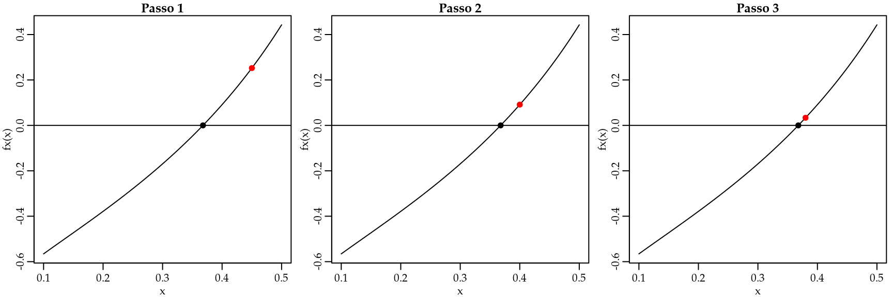
Na Figura 3.3, o ponto vermelho representa a solução inicial que é melhorada passo-a-passo na direção da solução ótima. Novamente existem diversas estratégias para melhorar uma solução inicial e cada uma destas estratégias leva a um método numérico para solução da equação não-linear. Neste livro serão apresentados os métodos do gradiente descendente e o método de Newton.
Seja usando métodos de confinamento ou métodos diretos as soluções numéricas não são exatas. Portanto é necessário ter critérios para determinar se uma solução é suficientemente precisa. Seja \(x_{ts}\) a solução verdadeira e \(x_{ns}\) uma solução numérica.
Quatro critérios são comumente usados na literatura:
- Erro real \(x_{ts} - x_{ns}\).
- Tolerância em \(f(x)\) \[| f(x_{ts}) - f(x_{ns}) | = |0 - \epsilon| = |\epsilon|.\]
- Tolerância na solução: tolerância máxima da qual a solução numérica pode desviar da solução verdadeira. Útil em geral quando métodos de confinamento são usados \[\left | \frac{b - a}{2} \right |.\]
- Erro relativo estimado: \[\left | \frac{x_{ns}^{n} - x_{ns}^{n-1}}{x_{ns}^{n-1}} \right |.\]
O uso de cada critério depende do método numérico sendo usado e vamos discutir em cada método qual ou quais critérios são mais adequados.
3.1.1 Método da bisseção
O método da bisseção é um método de confinamento. Neste caso, sabe-se que dentro de um intervalo \([a,b]\), \(f(x)\) é contínua e possui uma solução. Sendo assim, \(f(x)\) tem sinais opostos nos pontos finais do intervalo, conforme ilustrado na Figura 3.4.
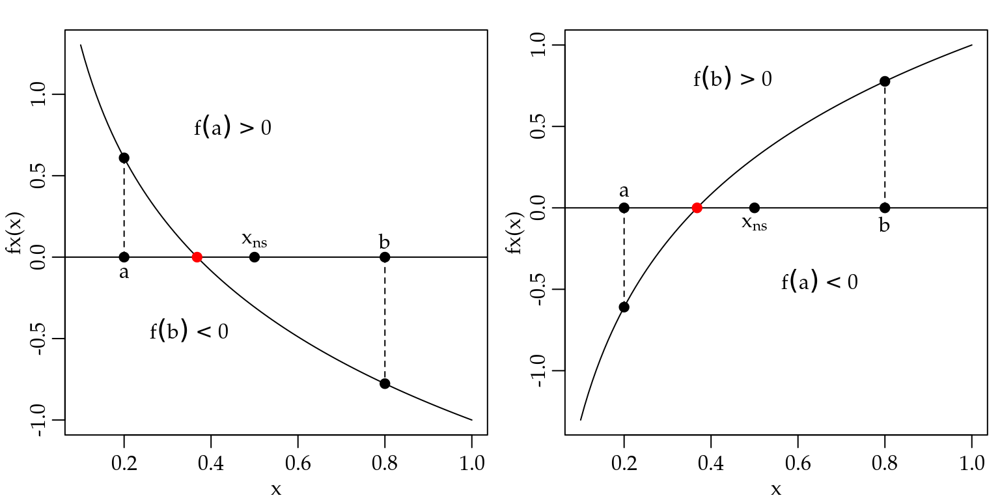
O algoritmo do método da bisseção é muito simples e consiste nos seguintes passos:
- Encontre \([a,b]\), tal que \(f(a)f(b) < 0\).
- Calcule a primeira estimativa \(x_{ns}^{(1)}\) usando \(x_{ns}^{(1)} = \frac{a+b}{2}\).
- Determine se a solução exata está entre \(a\) e \(x_{ns}^{(1)}\) ou entre \(x_{ns}^{(1)}\) e \(b\). Isso é feito verificando o sinal do produto \(f(a) f(x_{ns}^{(1)})\):
- Se \(f(a) f(x_{ns}^{(1)}) < 0\), a solução está entre \(a\) e \(x_{ns}^{(1)}\).
- Se \(f(a) f(x_{ns}^{(1)}) > 0\), a solução está entre \(x_{ns}^{(1)}\) e \(b\).
- Selecione o subintervalo que contém a solução e volte ao passo 2.
- Repita os passos 2 a 4 até que a tolerância especificada seja satisfeita.
O Código 3.1 implementa o algoritmo do método da bisseção em R.
Código 3.1 Método da bisseção.
Code
bissecao <- function(fx, a, b, tol = 1e-04, max_iter = 100) {
fa <- fx(a); fb <- fx(b)
if(fa*fb > 0) stop("Solução não está no intervalo")
solucao <- c()
sol <- (a + b)/2
solucao[1] <- sol
limites <- matrix(NA, ncol = 2, nrow = max_iter)
for(i in 1:max_iter) {
test <- fx(a)*fx(sol)
if(test < 0) {
solucao[i+1] <- (a + sol)/2
b = sol
}
if(test > 0) {
solucao[i+1] <- (b + sol)/2
a = sol
}
if( abs( (b-a)/2) < tol) break
sol = solucao[i+1]
limites[i,] <- c(a,b)
}
out <- list("Tentativas" = solucao, "Limites" = limites, "Raiz" = solucao[i+1])
return(out)
}Para ilustrar o uso do método da bisseção vamos resolver a seguinte equação não-linear \(f(x) = -\ln(x) - 1 = 0\). Apesar de ser uma equação não-linear é possível resolvê-la de forma analítica e a solução é \(\exp(-1)\). A ideia é poder comparar a solução numérica com a analítica neste simples exemplo.
Code
# Implementando a função
fx <- function(x){-log(x) - 1}
# Resolvendo numericamente
resul <- bissecao(fx = fx, a = 0.1, b = 1)
resul$Tentativas [1] 0.5500000 0.3250000 0.4375000 0.3812500 0.3531250 0.3671875 0.3742187
[8] 0.3707031 0.3689453 0.3680664 0.3676270 0.3678467 0.3679565 0.3679016Code
resul$Limites[1:12,] [,1] [,2]
[1,] 0.1000000 0.5500000
[2,] 0.3250000 0.5500000
[3,] 0.3250000 0.4375000
[4,] 0.3250000 0.3812500
[5,] 0.3531250 0.3812500
[6,] 0.3671875 0.3812500
[7,] 0.3671875 0.3742187
[8,] 0.3671875 0.3707031
[9,] 0.3671875 0.3689453
[10,] 0.3671875 0.3680664
[11,] 0.3676270 0.3680664
[12,] 0.3678467 0.3680664Code
resul$Raiz # Solução aproximada[1] 0.3679016Code
exp(-1) # Solução exata[1] 0.3678794O método da bisseção forneceu uma aproximação bastante razoável para a solução da equação. É possível ver claramente que os intervalos foram se estreitando até que a precisão especificada, neste caso \(1e^{-4}\) foi atingida.
3.1.2 Método regula-falsi
O método regula-falsi é também um método de confinamento. Assume-se que a solução está em um certo intervalo \([a,b]\) em que \(f(x)\) é contínua. A Figura 3.5 ilustra o método regula-falsi.
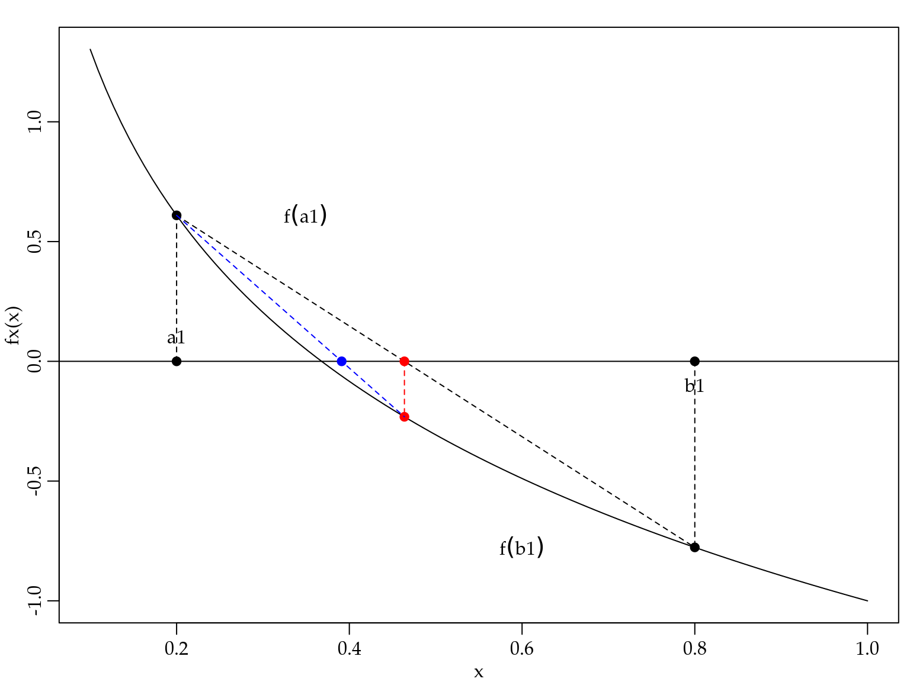
O algoritmo do método regula-falsi é um pouco mais elaborado e consiste nos seguintes passos:
- Escolha os pontos \(a\) e \(b\) entre os quais existe uma solução.
- Calcule a primeira estimativa: \(x^{(i)} = \frac{a f(b) - b f(a)}{f(b) - f(a)}.\)
- Determine se a solução está entre \(a\) e \(x^{i}\), ou entre \(x^{(i)}\) e \(b\).
- Se \(f(a)f(x^{(i)}) < 0\), a solução está entre \(a\) e \(x^{(i)}\).
- Se \(f(a)f(x^{(i)}) > 0\), a solução está entre \(x^{(i)}\) e \(b\).
- Selecione o subintervalo que contém a solução como o novo intervalo \([a,b]\) e volte ao passo 2.
- Repita passos 2 a 4 até a convergência.
O Código 3.2 implementa o algoritmo do método da regula-falsi em R.
Código 3.2 Método regula-falsi.
Code
regula_falsi <- function(fx, a, b, tol = 1e-04, max_iter = 100) {
fa <- fx(a); fb <- fx(b)
if(fa*fb > 0) stop("Solução não está no intervalo")
solucao <- c()
sol <- (a*fx(b) - b*fx(a))/(fx(b) - fx(a))
solucao[1] <- sol
limites <- matrix(NA, ncol = 2, nrow = max_iter)
for(i in 1:max_iter) {
test <- fx(a)*fx(sol)
if(test < 0) {
b = sol
solucao[i+1] <- (a*fx(b) - b*fx(a))/(fx(b) - fx(a))
}
if(test > 0) {
a = sol
solucao[i+1] <- sol <- (a*fx(b) - b*fx(a))/(fx(b) - fx(a))
}
if( abs(solucao[i+1] - solucao[i]) < tol) break
sol = solucao[i+1]
limites[i,] <- c(a,b)
}
out <- list("Tentativas" = solucao, "Limites" = limites, "Raiz" = sol)
return(out)
}Para ilustrar o uso do método vamos resolver a mesma equação da seção #BISSE3.1.1.
Code
# Implementando a função
fx <- function(x){-log(x) - 1}
# Resolvendo numericamente
resul <- regula_falsi(fx = fx, a = 0.1, b = 0.55)
resul$Tentativas [1] 0.4438416 0.4005326 0.3821146 0.3741249 0.3706274 0.3690900 0.3684130
[8] 0.3681147 0.3679832 0.3679252Code
resul$Limites[1:10,] [,1] [,2]
[1,] 0.1 0.4438416
[2,] 0.1 0.4005326
[3,] 0.1 0.3821146
[4,] 0.1 0.3741249
[5,] 0.1 0.3706274
[6,] 0.1 0.3690900
[7,] 0.1 0.3684130
[8,] 0.1 0.3681147
[9,] NA NA
[10,] NA NACode
resul$Raiz # Solução aproximada[1] 0.3679832Code
exp(-1) # Solução exata[1] 0.3678794Novamente vemos que o método numérico, neste caso o regula-falsi, forneceu uma aproximação razoável para a solução exata. Neste exemplo foram necessárias oito iterações para atingir a tolerância especificada.
De forma geral, os métodos de confinamento sempre convergem desde que a solução esteja no intervalo especificado. Um caso em que os métodos de confinamento podem falhar é quando a função é tangente ao eixo \(x\) e portanto não cruza o ponto \(f(x) = 0\). A convergência dos métodos de confinamento é lenta em comparação com os métodos abertos e são praticamente impossíveis de generalizar para sistemas de equações não-lineares de alta dimensão.
3.1.3 Método de Newton
O método de Newton é um método aberto. Supõe-se que a função seja contínua e diferenciável e que a solução está perto do valor inicial. A ideia é aproximar a função original por uma reta tangente ao valor inicial. Projetar a reta até o eixo \(x\) e projetar o ponto novamente até a função para obter a atualização da solução inicial. O processo é repetido até que algum critério de convergência seja atingido. A Figura 3.6 ilustra o esquema de atualização do método de Newton.
O algoritmo do método de Newton é simples e consiste nos seguintes passos:
- Escolha um ponto \(x_1\) como inicial. 2 Para \(i=1,2,\ldots\) até que o erro seja menor que um valor especificado, calcule \[x^{(i+1)} = x^{(i)} - \frac{f(x)}{f^{\prime}(x)}.\]
O Código 3.3 implementa o algoritmo do método de Newton em R.
Código 3.3 Método de Newton para resolver uma equação não-linear.
Code
newton <- function(fx, f_prime, x1, tol = 1e-04, max_iter = 10) {
solucao <- c()
solucao[1] <- x1
for(i in 1:max_iter) {
solucao[i+1] = solucao[i] - fx(solucao[i])/f_prime(solucao[i])
if( abs(solucao[i+1] - solucao[i]) < tol) break
}
return(solucao)
}Novamente ilustramos o uso do método resolvendo a equação \(f(x) = -\ln(x) - 1 = 0\). Note que agora precisamos da derivada de \(f(x)\) que neste caso é \(f^{\prime}(x) = -1/x\).
Code
# Função a ser resolvida
fx <- function(x){-log(x) - 1}
# Derivada da função a ser resolvida
fprime <- function(x){-1/x}
# Solução numérica
sol_new <- newton(fx = fx, f_prime = fprime, x1 = 0.5)
# Método de Newton
sol_new[length(sol_new)][1] 0.3678794Code
exp(-1) # Solução exata[1] 0.3678794A solução fornecida pelo método de Newton é idêntica à solução exata. A grande vantagem do método de Newton em relação aos métodos de confinamento é que ele pode ser facilmente estendido para resolver um sistema de equações não-lineares.
O algoritmo sofre apenas uma pequena alteração trocando a derivada de \(f(x)\) pelo Jacobiana de \(f(\boldsymbol{x})\), lembrando que agora \(\boldsymbol{x}\) é um vetor. O algoritmo é o seguinte:
- Escolha um vetor \(\boldsymbol{x}_1\) como inicial.
- Para \(i=1,2,\ldots\) até que o erro seja menor que um valor especificado, calcule \[\boldsymbol{x}^{(i+1)} = \boldsymbol{x}^{(i)} - \mathbf{J}(\boldsymbol{x}^{(i)})^{-1} f(\boldsymbol{x}^{(i)})\] onde \[ \mathbf{J}(\boldsymbol{x}^{(i)}) = \begin{bmatrix} \frac{\partial f_1}{\partial x_1} & \frac{\partial f_1}{\partial x_2} & \ldots & \frac{\partial f_1}{\partial x_n}\\ \frac{\partial f_2}{\partial x_1} & \frac{\partial f_2}{\partial x_2} & \ldots & \frac{\partial f_2}{\partial x_n} \\ \vdots & \vdots & \ddots & \vdots\\ \frac{\partial f_n}{\partial x_1} & \frac{\partial f_n}{\partial x_2} & \ldots & \frac{\partial f_n}{\partial x_n} \end{bmatrix} \] é o Jacobiano de \(\mathbf{f}(\boldsymbol{x})\).
A implementação computacional é apresentada no Código #lem:NewtonSistema3.4
Código 3.4 Método de Newton para resolver um sistema de equações não-lineares.
Code
newton <- function(fx, jacobian, x1, tol = 1e-04, max_iter = 10) {
solucao <- matrix(NA, ncol = length(x1), nrow = max_iter)
solucao[1,] <- x1
for(i in 1:max_iter) {
J <- jacobian(solucao[i,])
grad <- fx(solucao[i,])
solucao[i+1,] = solucao[i,] - solve(J, grad)
if( sum(abs(solucao[i+1,] - solucao[i,])) < tol) break
}
return(solucao)
}Para ilustrar o uso do método vamos resolver o seguinte sistema de duas equações não-lineares.
\[\begin{eqnarray*} f_1(x_1, x_2) & =& x_2 - \frac{1}{2}( \exp^{x_1/2} + \exp^{-x/2}) = 0 \\ f_2(x_1, x_2) & =& 9x_1^2 + 25x_2^2 - 225 = 0. \end{eqnarray*}\]
Para usar o método de Newton precisamos obter o Jacobiano que neste caso é dado por \[ \mathbf{J}(\boldsymbol{x}^{(i)}) = \begin{bmatrix} -\frac{1}{2}( \frac{\exp^{x1/2}}{2} - \frac{\exp^{-x1/2}}{2}) & 1 \\ 18 x_1 & 50 x_2 \end{bmatrix}. \]
Finalmente, implementamos o sistema e seu Jacobiano e usamos a função em #lem:NewtonSistema3.4 para resolver o sistema.
Code
# Sistema a ser resolvido
fx <- function(x){c(x[2] - 0.5*(exp(x[1]/2) + exp(-x[1]/2)),
9*x[1]^2 + 25*x[2]^2 - 225 )}
# Jacobiano
Jacobian <- function(x) {
jac <- matrix(NA,2,2)
jac[1,1] <- -0.5*(exp(x[1]/2)/2 - exp(-x[1]/2)/2)
jac[1,2] <- 1
jac[2,1] <- 18*x[1]
jac[2,2] <- 50*x[2]
return(jac)
}
# Resolvendo
sol <- newton(fx = fx, jacobian = Jacobian, x1 = c(1,1))
tail(sol,4) # Solução [,1] [,2]
[7,] 3.031159 2.385865
[8,] 3.031155 2.385866
[9,] NA NA
[10,] NA NACode
fx(sol[8,]) # OK[1] -3.125056e-12 9.907808e-11Neste exemplo foram necessárias oito iterações para atingir a convergência. Para verificar a solução obtida, simplesmente avaliamos o sistema no ponto e vemos que a solução é bastante satisfatória. O método de Newton irá convergir tipicamente se três condições forem satisfeitas:
- As funções \(f_1, f_2, \ldots, f_n\) e suas derivadas forem contínuas e limitadas na vizinhança da solução.
- O Jacobiano deve ser diferente de zero na vizinhança da solução.
- A estimativa inicial de solução deve estar suficientemente próxima da solução exata.
O principal custo operacional do método de Newton é que as derivadas parciais (elementos da matriz Jacobiana) devem ser determinadas. Isso pode ser feito analítica ou numericamente. Além disso, o principal custo computacional é que, a cada iteração do algoritmo, deve-se resolver um sistema de equações. Esse passo pode ser crítico para sistemas com centenas ou milhares de incógnitas tornando o método não aplicável nestas situações.
3.1.4 Método do gradiente descendente
O método do Gradiente descendente em geral é usado para encontrar o mínimo ou máximo de uma função. Suponha que desejamos maximizar \(F(x)\) cuja derivada é \(f(x)\). Sabemos que um ponto crítico será obtido em \(f(x) = 0\). Note que \(f(x)\) é o gradiente de \(F(x)\), assim aponta na direção do máximo da função. Assim, podemos caminhar na direção da raiz apenas seguindo o gradiente, ou seja,
\[x^{(i+1)} = x^{(i)} - \alpha f(x^{(i)}),\]
onde \(\alpha > 0\) é um parâmetro de tuning usado para controlar o tamanho do passo. Sua especificação não é simples e é comum ser obtido por tentativa e erro. Resumindo, o algoritmo do método do gradiente descendente é o seguinte:
- Escolha um ponto \(x_1\) como inicial.
- Para \(i=1,2,\ldots\) até que o erro seja menor que um valor especificado, calcule \[x^{(i+1)} = x^{(i)} - \alpha f(x^{(i)}).\]
A implementação computacional para o caso de apenas uma equação não-linear é apresentada no Código 3.5.
Código 3.5 Método do gradiente descendente para resolver uma equação não-linear.
Code
grad_des <- function(fx, x1, alpha, max_iter = 100, tol = 1e-04) {
sol <- c()
sol[1] <- x1
for(i in 1:max_iter) {
sol[i+1] <- sol[i] - alpha*fx(sol[i])
if(sol[i+1] < 0) {sol[i+1] = 1e-04}
if(abs(fx(sol[i+1])) < tol) break
}
return(sol)
}Novamente ilustramos o uso do método resolvendo a equação \(f(x) = -\ln(x) - 1 = 0\).
Code
# Função a ser resolvida
fx <- function(x){-log(x) - 1}
# Solução numérica
sol_grad <- grad_des(fx = fx, alpha = -0.2, x1 = 1)
sol_grad[length(sol_grad)][1] 0.3679003Code
# Exata
exp(-1)[1] 0.3678794Note que neste exemplo \(\alpha = -0.2\). Este valor foi obtido por tentativa e erro. A recomendação geral é usar valores não muito distantes de zero. Uma outra opção é fazer uma busca em uma grade de valores de \(\alpha\). O fato é que \(\alpha\) é fundamental para a convergência do método e deve ser especificado caso a caso.
Da mesma forma que o método de Newton, o método do gradiente descendente estende naturalmente para o caso de sistemas de equações não-lineares. O algoritmo é o seguinte
- Escolha um vetor \(\boldsymbol{x}_1\) como inicial.
- Para \(i=1,2,\ldots\) até que o erro seja menor que um valor especificado, calcule
\[\boldsymbol{x}^{(i+1)} = \boldsymbol{x}^{(i)} - \alpha \mathbf{f}(\boldsymbol{x}^{(i)}).\]
Diversas modificações do método surgem por meio de diferentes estratégias para especificar o parâmetro \(\alpha\), que na literatura de aprendizagem de máquina é chamado de taxa de aprendizagem. O Código #lem:graddessist3.6 apresenta a implementação computacional do método.
Código 3.6 Método do gradiente descendente para resolver um sistema de equações não-lineares.
Code
grad_des <- function(fx, x1, alpha, max_iter = 100, tol = 1e-04) {
solucao <- matrix(NA, ncol = length(x1), nrow = max_iter)
solucao[1,] <- x1
for(i in 1:c(max_iter-1)) {
solucao[i+1,] <- solucao[i,] - alpha*fx(solucao[i,])
#print(c(i, solucao[i+1,]))
if( sum(abs(solucao[i+1,] - solucao[i,])) <= tol) break
}
return(solucao)
}Para ilustrar o uso do método vamos resolver o sistema de equações não-lineares
\[\begin{eqnarray*} f_1(x_1, x_2) & =& -2\sum_{i=1}^{10}(y_i - x_1 - x_2 z_i) \\ f_2(x_1, x_2) & =& -2\sum_{i=1}^{10}(y_i - x_1 - x_2 z_i)z_i \end{eqnarray*}\]
onde \[ y_i = (5.15; 6.40; 2.77; 5.72; 6.25; 3.45; 5.00; 6.86; 4.86; 3.72) \quad \text{ e} \\ z_i = (0.28; 0.78; 0.40; 0.88; 0.94; 0.04; 0.52; 0.89; 0.55; 0.45) \].
Code
fx <- function(x) {
y <- c(5.15, 6.40, 2.77, 5.72, 6.25, 3.45, 5.00, 6.86, 4.86, 3.72)
z <- c(0.28, 0.78, 0.40, 0.88, 0.94, 0.04, 0.52, 0.89, 0.55, 0.45)
term1 <- - 2*sum(y - x[1] - x[2]*z)
term2 <- -2*sum( (y - x[1] - x[2]*z)*z)
out <- c(term1, term2)
return(out)
}
sol_grad <- grad_des(fx = fx, x1 = c(5, 0), alpha = 0.05, max_iter = 140)
tail(sol_grad) [,1] [,2]
[135,] 2.925670 3.651604
[136,] 2.925631 3.651668
[137,] 2.925594 3.651728
[138,] NA NA
[139,] NA NA
[140,] NA NACode
fx(x = sol_grad[137,])[1] 0.0006924313 -0.0011375970A grande vantagem do método do gradiente descendente é a sua simplicidade e facilidade computacional. Uma vez que não é necessário obter o Jacobiano como no método de Newton, esse método é a primeira escolha quando precisamos lidar com grandes sistemas de equações não-lineares. É importante notar que esse método pressupõe que existe uma função multidimensional sendo minimizada. No caso de estarmos resolvendo diretamente um sistema de equações, temos que ter cuidado ao avaliar se a função multidimensional que gerou o sistema deve ser minimizada ou maximizada. No caso de ser maximizada deve-se ter cuidado com o sinal do parâmetro de tuning \(\alpha\), que neste caso será negativo. Outra solução é modificar a função multiplicando por \(-1\) para que o objetivo seja minimizar a função, levando o sistema de equações para a forma adequada para o método do gradiente descendente.
A desvantagem do método gradiente descendente é a necessidade de especificar o parâmetro \(\alpha\), o que pode ser difícil em termos práticos. Em particular neste exemplo, foi bastante difícil obter a convergência, note que foram necessárias \(137\) iterações para convergência. Em geral, o método do gradiente descendente vai precisar de mais iterações para atingir convergência do que o método de Newton. Porém, cada iteração é mais barata e rápida computacionalmente. Vale mencionar que grande parte das técnicas modernas de aprendizagem de máquina, como deep learnig, usam variações deste método na fase de treinamento.
3.2 Diferenciação numérica
Nós discutimos no Capítulo 1 a importância da derivada em ciência de dados e como obtê-la por meio do cálculo de limites. Nesta subseção vamos ver que a derivada pode ser aproximada de forma numérica usando diferenças finitas. Calcular o valor da derivada de uma função de forma numérica é indicado em pelo menos três situações:
- \(f^{\prime}(x)\) é difícil de obter analiticamente.
- \(f^{\prime}(x)\) é caro de calcular computacionalmente, porém \(f(x)\) é barata de calcular computacionalmente.
- Quando a função é especificada apenas por um conjunto de pontos.
O caso número 3 é comum em problemas de engenharia, porém pouco comum em ciência de dados. Sendo assim, daremos maior ênfase aos casos 1 e 2.
Lembre-se que a derivada \(f^{\prime}(x)\) de uma função \(f(x)\) no ponto \(x = a\) é definida como:
\[f^{\prime}(a) = \lim_{x \to a} \frac{f(x) - f(a)}{x-a}.\]
A derivada é o valor da inclinação da reta tangente à função em \(x = a\). A ideia de diferenciação numérica é simplesmente imitar essa equação de forma computacional. Assim, escolhe-se um ponto \(x\) próximo a \(a\) e calcula-se a inclinação da reta que conecta os dois pontos. Claramente a precisão do cálculo aumenta quando \(x\) aproxima de \(a\).
A aproximação da derivada por diferenças finitas pode ser feito de maneira simples usando as seguintes fórmulas de diferenciação numérica:
- Diferença progressiva: inclinação da reta que conecta os pontos \((x_i, f(x_i))\) e \((x_{i+1}, f(x_{i+1}))\): \[f^{\prime}(x_i) = \frac{f(x_{i+1}) - f(x_i)}{x_{i+1} - x_i}.\]
- Diferença regressiva: inclinação da reta que conecta os pontos \((x_{i-1}, f(x_{i-1}))\) e \((x_{i}, f(x_{i}))\): \[f^{\prime}(x_i) = \frac{f(x_i) - f(x_{i-1})}{x_i - x_{i-1}}.\]
- Diferença central: inclinação da reta que conecta os pontos \((x_{i-1}, f(x_{i-1}))\) e \((x_{i+1}, f(x_{i+1}))\): \[f^{\prime}(x_i) = \frac{f(x_{i+1}) - f(x_{i-1})}{x_{i+1} - x_{i-1}}.\]
A Figura 3.7 ilustra graficamente cada um destes métodos.
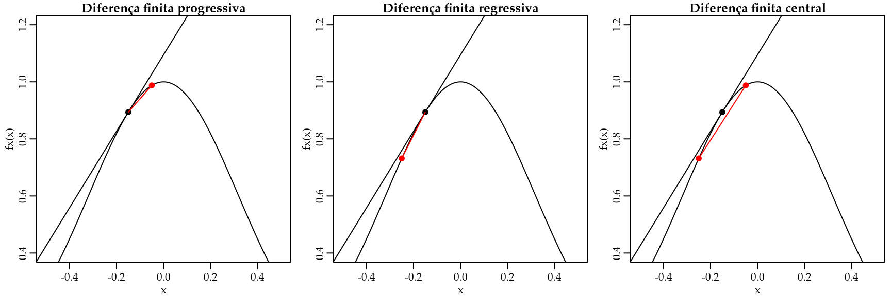
A implementação computacional é muito simples, conforme as funções em 3.7, 3.8 e 3.9.
Código 3.7 Diferença progressiva.
Code
dif_prog <- function(fx, x, h) {
df <- (fx(x + h) - fx(x))/( (x + h) - x)
return(df)
}Código 3.8 Diferença regressiva.
Code
dif_reg <- function(fx, x, h) {
df <- (fx(x) - fx(x - h))/( x - (x - h))
return(df)
}Código 3.9 Diferença central.
Code
dif_cen <- function(fx, x, h) {
df <- (fx(x + h) - fx(x - h))/( (x + h) - (x - h))
return(df)
}Para ilustrar o uso destes métodos vamos obter a derivada da função \(f(x) = x^3\) que podemos facilmente obter analiticamente e é dada por \(f^{\prime}(x) = 3 x^2\). Assim, podemos comparar a qualidade da aproximação fornecida por cada método.
Code
fx <- function(x) x^3
# Diferença progressiva
dif_prog(fx, x = 2, h = 0.001)[1] 12.006Code
# Diferença regressiva
dif_reg(fx, x = 2, h = 0.001)[1] 11.994Code
# Diferença central
dif_cen(fx, x = 2, h = 0.001)[1] 12Code
# Exata
3*2^2[1] 12Os três métodos fornecem valores próximos ao valor verdadeiro da derivada da função. A qualidade da aproximação depende do tamanho de \(h\) que neste caso foi \(h=0.01\). Pode parecer natural simplesmente diminuir \(h\) tanto quanto possível para melhorar a qualidade da aproximação. No entanto, tal estratégia não é recomendada, uma vez que ao diminuir o valor de \(h\), você estará realizando uma divisão por um número muito próximo de zero o que pode levar a um erro de arredondamento muito maior do que o erro no cálculo da derivada.
Por ser uma aproximação, alguma diferença deve existir entre a aproximação e o cálculo obtido de forma analítica. Para estudar essa diferença ou pelo menos ter uma noção do tamanho do erro de aproximação é comum obter as fórmulas de diferenciação numérica usando a expansão em séries de Taylor. Vamos ver como tais aproximações são realizadas no caso da diferença progressiva, regressiva e central e depois como elas podem ser generalizadas.
Para o caso da diferença progressiva, começamos fazendo a aproximação de Taylor para o ponto \(x_{i+1}\) em torno de \(x_i\), ou seja, \[f(x_{i+1}) = f(x_i) + f^{\prime}(x_i)h + \frac{f''(x_i)}{2!}h^2 + \frac{f'''(x_i)}{3!}h^3 + \ldots,\] onde \(h = x_{i+1} - x_i\). Fixando dois termos e deixando os outros termos como um resíduo, temos \[f(x_{i+1}) = f(x_i) + f'(x_i) h + \frac{f''(\xi)}{2!}h^2. \] Agora simplesmente isolamos \(f'(x_i)\) e temos \[f'(x_i) = \frac{f(x_{i+1}) - f(x_i)}{h} - \frac{f''(\xi)}{2!}h^2.\] Neste caso o erro de truncamento é \[- \frac{f''(\xi)}{2!}h^2 = O(h).\] A notação \(O(h)\) diz que o erro da aproximação é da ordem de \(h\). Veja que \(h\) é o que controla a precisão da aproximação no termo que não é deixado como o resíduo.
Para o caso da diferença regressiva trabalhamos exatamente da mesma forma, porém expandimos em torno do ponto \(x_{i-1}\), assim obtemos \[f(x_{i-1}) = f(x_i) - f^{\prime}(x_i)h + \frac{f''(x_i)}{2!}h^2 + \frac{f'''(x_i)}{3!}h^3 + \ldots,\]
onde \(h = x_{i} - x_{i-1}\).
Novamente, fixando dois termos e deixando os outros termos como um resíduo, temos \[f(x_{i-1}) = f(x_i) - f'(x_i) h + \frac{f''(\xi)}{2!}h^2. \] Agora isolando \(f'(x_i)\), temos \[f'(x_i) = \frac{f(x_{i}) - f(x_{i-1})}{h} + \frac{f''(\xi)}{2!}h^2.\] Por fim, o erro de truncamento é dado por \[\frac{f''(\xi)}{2!}h^2 = O(h).\] Para o caso da diferença central é um pouco mais trabalhoso. Primeiro expandimos em séries de Taylor em torno de \(x_{i+1}\),
\[\begin{equation} f(x_{i+1}) = f(x_i) + f^{\prime}(x_i)h + \frac{f''(x_i)}{2!}h^2 + \frac{f'''(\xi_1)}{3!}h^3, \tag{3.1} \end{equation}\] onde \(\xi_1\) está entre \(x_i\) e \(x_{i+1}\).
Agora procedemos com a expansão em torno de \(x_{i-1}\), \[\begin{equation} f(x_{i-1}) = f(x_i) - f^{\prime}(x_i)h + \frac{f''(x_i)}{2!}h^2 + \frac{f'''(\xi_2)}{3!}h^3, \tag{3.2} \end{equation}\] onde \(\xi_2\) está entre \(x_{i-1}\) e \(x_{i}\).
Subtraindo (3.1) de (3.2), obtemos \[f(x_{i+1}) - f(x_{i-1}) = 2f'(x_i) h + \frac{f'''(\xi_1)}{3!}h^3 + \frac{f'''(\xi_2)}{3!}h^3.\] Resolvendo para \(f'(x_i)\), temos \[f'(x_i) = \frac{f(x_{i+1}) - f(x_{i-1})}{2h} + O(h^2).\] Note que para o caso da diferença central a ordem do erro de truncamento é de \(O(h^2)\) e portanto mais precisa que a diferença progressiva e regressiva.
As fórmulas obtidas até aqui usam apenas dois pontos para aproximar a derivada. Porém, usando a expansão em séries de Taylor podemos obter fórmulas com um maior número de pontos. Para mostrar como é o processo, vamos obter a fórmula de diferença finita progressiva com três pontos.
A ideia é aproximar \(f'(x_i)\) avaliando a função no ponto \(x_i\) e nos dois pontos seguintes \(x_{i+1}\) e \(x_{i+2}\). Procedendo com a aproximação de Taylor em \(x_{i+1}\) e \(x_{i+2}\),
\[\begin{equation} f(x_{i+1}) = f(x_i) + f^{\prime}(x_i)h + \frac{f''(x_i)}{2!}h^2 + \frac{f'''(\xi_1)}{3!}h^3, \tag{3.3} \end{equation}\]
\[\begin{equation} f(x_{i+2}) = f(x_i) + f^{\prime}(x_i)2h + \frac{f''(x_i)}{2!}(2h)^2 + \frac{f'''(\xi_2)}{3!}(2h)^3. \tag{3.4} \end{equation}\]
As equações (3.3) e (3.4) são combinadas de forma que os termos com derivada segunda desapareçam. Assim, multiplicando Equação (3.3) por \(4\) e subtraindo Equação (3.4), temos
\[4 f(x_{i+1}) - f(x_{i+2}) = 3 f(x_i) + 2 f'(x_i)h + \frac{4f'''(\xi_1)}{3!}h^3 - \frac{f'''(\xi_2)}{3!}(2h)^3.\]
Resolvendo em \(f'(x_i)\), temos
\[f'(x_i) = \frac{f(x_{i-2}) - 4 f(x_{i-1}) + 3 f(x_i)}{2h} + O(h).\]
Usando as mesmas ideias podemos aproximar a derivada segunda de uma função qualquer por diferenças finitas. A derivação das fórmulas é idêntica, porém mais tediosa. A fórmula da diferença central com três pontos para a derivada segunda é
\[f''(x_i) = \frac{f(x_{i-1}) - 2 f(x_i) + f(x_{i+1})}{h^2} + O(h^2),\]
e com quatro pontos a diferença central fica dada por
\[f''(x_i) = \frac{-f(x_{i-2}) + 16 f(x_{i-1}) - 30 f(x_i) + 16 f(x_{i+1}) - f(x_{i+2})}{12 h^2} + O(h^4).\]
Em todas as fórmulas o erro de truncamento é função de \(h\), ou seja, do espaçamento entre os pontos, i.e. \(h = x_{i+1} - x_i\). Portanto, fazendo \(h\) pequeno o erro de truncamento será pequeno. O erro de arredondamento depende da precisão finita de cada computador. Mesmo que \(h\) possa ser tão pequeno quanto desejado, o erro de arredondamento pode crescer quando se diminui \(h\). Por isso, a recomendação é usar \(h\) não tão pequeno, porém que forneça uma aproximação razoável. Isso significa que algumas tentativas são necessárias para fixar um valor de \(h\) razoável para a função sendo derivada.
Uma forma de melhorar a aproximação quando precisão é desejada ao invés de velocidade computacional é usar o método de Richardson. A ideia da extrapolação de Richardson é obter uma aproximação mais precisa da derivada a partir de duas aproximações menos precisas.
Considere o valor \(D\) de uma derivada (desconhecida) calculada pela fórmula
\[\begin{equation} D = D(h) + k_2 h^2 + k_4 h^4, \tag{3.5} \end{equation}\]
onde \(D(h)\) aproxima \(D\) e \(k_2\) e \(k_4\) são termos de erro.
O uso da mesma fórmula, porém com espaçamento \(h/2\) resulta
\[\begin{equation} D = D\left(\frac{h}{2}\right) + k_2 \left(\frac{h}{2}\right)^2 + k_4 \left(\frac{h}{2}\right)^4. \tag{3.6} \end{equation}\]
A Equação (3.6) pode ser reescrita, após multiplicar por 4, como \[\begin{equation} 4D = 4D\left(\frac{h}{2}\right) + k_2 h^2 + k_4 \frac{h^4}{4}. \tag{3.7} \end{equation}\]
Subtraindo (3.5) de (3.7) elimina os termos com \(h^2\) e fornece \[\begin{equation} 3D = 4D\left(\frac{h}{2}\right) + D(h) - k_4 \frac{3h^4}{4}. \tag{3.8} \end{equation}\]
Por fim, resolvendo (3.8), temos \[\begin{equation} D = \frac{1}{3} \left( 4D\left(\frac{h}{2}\right) + D(h) \right) - k_4 \frac{h^4}{4}. \tag{3.9} \end{equation}\]
O erro na Equação (3.9) é agora \(O(h^4)\). O valor de \(D\) é aproximado por \[\begin{equation*} D = \frac{1}{3} \left( 4D\left(\frac{h}{2}\right) + D(h) \right) + O(h^4). \end{equation*}\]
Note que a partir de duas aproximações de ordem inferiores, obtemos uma aproximação de \(O(h^4)\) mais precisa. Seguindo um procedimento similar a partir de duas aproximações com erro \(O(h^4)\) chegamos que \[\begin{equation*} D = \frac{1}{15} \left( 16 D\left(\frac{h}{2}\right) + D(h) \right) + O(h^6). \end{equation*}\]
Que proporciona uma aproximação ainda mais precisa.
Para ilustrar o uso da extrapolação de Richardson vamos calcular a derivada de \(f(x) = \frac{2^x}{x}\) no ponto \(x = 2\). A solução exata é facilmente obtida e dada por \(\frac{\log(2)2^x}{x} - \frac{2^x}{x^2}\). Assim, poderemos comparar a solução numérica com a exata para ver o ganho no uso do método de Richardson. Para comparar os erros vamos fazer a razão entre a solução exata e a aproximada. Quanto mais próxima de 1 for essa razão melhor é a aproximação. Como as quantidades envolvidas são pequenas, podemos ainda subtrair 1 da razão para ter valores em torno de 0 e multiplicar por 100 para evidenciar as diferenças. O Código 3.10 apresenta a comparação entre o valor exato da derivada e a aproximação usando diferença central.
Código 3.10 Diferença entre a solução exata e a diferença central.
Code
fx <- function(x) (2^x)/x
fpx <- function(x)(log(2)*(2^x))/x - (2^x)/x^2
erro <- fpx(x = 2)/dif_cen(fx = fx, x = 2, h = 0.2)
(erro-1)*100[1] 0.345544Agora vamos usar a fórmula da diferença central e a extrapolação de Richardson para obter uma aproximação ainda mais precisa. O procedimento é ilustrado no Código 3.11.
Código 3.11 Diferença entre a solução exata e extrapolação de Richardson.
Code
D2 <- dif_cen(fx = fx, x = 2, h = 0.2/2)
D <- dif_cen(fx = fx, x = 2, h = 0.2)
der <- (1/3)*( 4*D2 - D)
erro2 <- fpx(x = 2)/der
(erro2-1)*100[1] -0.001585268Code
c("Exata" = fpx(x = 2), "Richardson" = der,
"Central" = dif_cen(fx = fx, x = 2, h = 0.2)) Exata Richardson Central
0.3862944 0.3863005 0.3849641 Code
c("Erro: Diferença Central" = (erro-1)*100,
"Erro: Richardson" = (erro2-1)*100)Erro: Diferença Central Erro: Richardson
0.345543965 -0.001585268 Como esperado, o método de Richardson oferece uma aproximação mais precisa que o método usando apenas a diferença central.
As técnicas para diferenciação numéricas apresentadas até aqui estendem naturalmente para a situação em que as funções têm mais de uma variável. Lembre-se que como discutido no Capítulo 1 para funções com muitas variáveis a derivada parcial da função em relação a uma das variáveis representa a taxa de variação da função em relação a essa variável, mantendo as demais variáveis constantes. Portanto, as fórmulas de diferenças finitas podem ser usadas no cálculo das derivadas parciais. A ideia é simplesmente aplicar as fórmulas em cada uma das variáveis, mantendo as outras fixas. A implementação computacional é mais trabalhosa e difícil de generalizar.
Para mostrar como obter derivadas parciais numéricas, considere que é de interesse derivar \(f(\beta_0, \beta_1) = \sum_{i=1}^n | y_i - (\beta_0 + \beta_1 x_i) |\) em relação a \(\beta_0\) e \(\beta_1\). Essa função é a chamada perda absoluta e pode ser usada como uma alternativa à perda quadrática que foi usada no modelo de regressão linear. Para aproximar a derivada vamos usar a fórmula de diferença central com dois pontos. O Código em 3.12 apresenta uma função genérica para calcular a derivada via diferença central de uma função \(f(x)\) qualquer em um ponto especificado. O argumento fx é a função a ser diferenciada, o argumento pt é o ponto onde a derivada deve ser calculada. Por fim, o uso dos ... indica que a função tem outros argumentos que não são explicitamente especificados. Esses argumentos serão neste caso os argumentos da função fx.
Código 3.12 Implementação genérica da diferença central com dois pontos.
Code
dif_cen <- function(fx, pt, h, ...) {
df <- (fx(pt + h, ...) - fx(pt - h, ...))/( (pt + h) - (pt - h))
return(df)
}Vamos agora implementar a função a ser derivada. Note que a função deve receber um vetor como entrada. O argumento par deve ser um vetor. Como argumentos extras a função precisa de y e x1 para ser calculada.
Code
fx <- function(par, y, x1) {sum ( abs( y - (par[1] + par[2]*x1)) )}Por ser uma função de duas variáveis independentes, o vetor gradiente terá tamanho dois. O Código #lem:gradexemplo3.13 implementa o vetor gradiente para a função perda absoluta.
Código 3.13 Aproximação via diferenças finitas para o gradiente da função perda absoluta.
Code
grad_fx <- function(fx, par, h, ...) {
fbeta0 <- function(beta0, beta1, y, x) fx(par = c(beta0, beta1), y = y, x = x)
fbeta1 <- function(beta1, beta0, y, x) fx(par = c(beta0, beta1), y = y, x = x)
db0 <- dif_cen(fx = fbeta0, pt = par[1], h = h, beta1 = par[2], y = y, x = x)
db1 <- dif_cen(fx = fbeta1, pt = par[2], h = h, beta0 = par[1], y = y, x = x)
return(c(db0, db1))
}Apenas como exemplo vamos simular um conjunto de x e y e comparar a aproximação via diferenças finitas com o gradiente obtido de forma analítica. Simulando o vetor x de uma distribuição uniforme no intervalo \((0,1)\) e y de uma distribuição Normal com média \(\mu = 2 + 3 x\) e desvio-padrão \(1\). Esses valores foram escolhidos de forma arbitrária e não têm nenhuma relação com o cálculo das derivadas. São apenas para criar dados artificiais.
Code
set.seed(123)
x <- runif(100)
y <- rnorm(100, mean = 2 + 3*x, sd = 1)Obtendo o gradiente numericamente e comparando com a solução exata.
Code
## Solução numérica
grad_fx(fx = fx, par = c(2, 3), h = 0.001, y = y, x1 = x)[1] 6.000000 2.272805Code
## Solução exata
c(sum(((y - 2 - 3*x)/abs(y - 2 -3*x))*(-1)),
sum(((y - 2 - 3*x)/abs(y - 2 -3*x))*(-x)))[1] 6.000000 2.272805Neste caso, o gradiente analítico e numérico coincidem. Convidamos o leitor a tentar diferentes pontos para avaliação do gradiente e verificar se essa situação se repete. Conforme o número de variáveis independentes cresce, ou a ordem da derivada cresce, a implementação de tais aproximações fica mais complicada e trabalhosa. No entanto, o R dispõe de diversos pacotes extras que trazem implementações eficientes tanto do gradiente como do Hessiano usando as fórmulas de diferenças finitas. Em particular, o pacote numDeriv é uma escolha usual. Este pacote oferece as funções grad() e hessian() para obter o gradiente e o hessiano de uma função qualquer. O Código 3.14 ilustra o uso destas funções para obter o gradiente e o hessiano da função perda absoluta.
Código 3.14 Exemplo de uso do pacote numDeriv para obter o gradiente e o hessiano.
Code
numDeriv::grad(func = fx, x = c(2, 3), y = y, x1 = x)[1] 6.000000 2.272805Code
## [1] 6.00 2.27
numDeriv::hessian(func = fx, x = c(2, 3), y = y, x1 = x) [,1] [,2]
[1,] 58.91271 29.53710
[2,] 29.53710 48.86648Como opção default a função grad() usa o método de Richardson para aproximar a derivada via diferenças finitas. Existem outras opções mais baratas computacionalmente para mais detalhes veja ?grad.
3.3 Integração numérica
O cálculo de integrais aparece com frequência em modelos estatísticos avançados. Na teoria das probabilidades integrais são fundamentais. Em algumas situações, o cálculo da integral como a antiderivada conforme discutido no Capítulo 1 não é possível. Assim, precisamos recorrer a métodos numéricos para resolver a integral de forma aproximada. Um exemplo muito comum da aplicação de métodos numéricos em probabilidades é o cálculo de probabilidades baseado na distribuição Normal. Em cursos de estatística básica, para obter probabilidades com base na curva da distribuição Normal, é comum o uso de tabelas que foram obtidas para a distribuição Normal padrão usando métodos numéricos, já que a solução analítica da área abaixo da curva não é possível. Obviamente essa solução é sub-ótima e na maioria dos softwares modernos métodos numéricos são usados para aproximar o valor de tais integrais. Para resolver uma integral de forma numérica temos pelo menos três abordagens:
- Métodos baseados em soma finita.
- Aproximar a função por uma outra de fácil integração.
- Estimar o valor da integral.
Vamos começar apresentando alguns métodos simples apenas para introduzir as ideias gerais e depois discutiremos os métodos mais usados em termos práticos.
3.3.1 Método Trapezoidal
O método trapezoidal usa uma função linear para aproximar o integrando e integra a função aproximada de forma usual. Sendo \(f(x)\) o integrando pode ser aproximado por séries de Taylor da seguinte forma \[f(x) \approx f(a) + (x - a) \left[ \frac{f(b) - f(a)}{ b - a} \right].\]
Integrando analiticamente essa aproximação, tem-se \[\begin{eqnarray*} I(f) & \approx& \int_a^b f(a) + (x - a)\left[ \frac{f(b) - f(a)}{ b - a} \right] dx \\ & =& f(a) (b - a) + \frac{1}{2}[f(b) - f(a)](b - a). \end{eqnarray*}\]
Simplificando, tem-se
\[\begin{equation*} I(f) \approx \frac{[f(a) + f(b)]}{2} (b - a). \tag{3.10} \end{equation*}\] A implementação computacional é muito simples e apresentada no Código 3.15
Código 3.15 Método trapezoidal
Code
trapezio <- function(integrando, a, b, ...){
Int <- ((integrando(a, ...) + integrando(b, ...))/2)*(b-a)
return(Int)
}Para ilustrar o método vamos calcular a integral \(\int_{2}^3 x^2 dx\). A solução exata é simples e dada por \[\int_{2}^3 x^2 dx = \frac{x^3}{3}|_2^3 = \frac{3^3}{3} - \frac{2^3}{3} = 6.33.\]
Assim, podemos comparar a aproximação numérica com a solução exata.
Code
fx <- function(x) x^2
trapezio(integrando = fx, a = 2, b = 3)[1] 6.5Neste caso vemos que a aproximação não foi próxima ao valor verdadeiro. Isso é porque aproximamos uma função quadrática por uma função linear. Se ao invés de aproximarmos por uma função linear aproximarmos por um polinômio a aproximação deve melhorar. Essa é a ideia do método de Simpson.
3.3.2 Método de Simpson \(1/3\)
No método de Simpson \(1/3\) o integrando é aproximado usando um polinômio de segundo grau. Os pontos finais do polinômio são escolhidos de forma a coincidir com os limites de integração, ou seja,\(x_1 = a\) e \(x_3 = b\). Por fim, é incluído um ponto central, \(x_2 = (a+b)/2\). Desta forma, o polinômio pode ser escrito na forma:
\[\begin{equation} p(x) = \alpha + \beta(x - x_1) + \lambda(x - x_1)(x - x_2), \tag{3.11} \end{equation}\]
onde \(\alpha\), \(\beta\) e \(\lambda\) são constantes desconhecidas.
Impomos a condição de que o polinômio deve passar por todos os pontos, \[p(x_1) = f(x_1), p(x_2) = f(x_2) \quad \text{e} \quad p(x_3) = f(x_3).\]
Isso resulta em: \[\begin{equation*} \alpha = f(x_1), \quad \beta = [ f(x_2) - f(x_1)] / (x_2 - x_1) \quad \text{e} \end{equation*}\] \[\lambda = \frac{f(x_3) - 2 f(x_2) + f(x_1)}{2(h)^2}\]
onde \(h = (b-a)/2\).
Agora, substituindo em simpson(3.11) e integrando \(p(x)\), obtém-se \[\begin{equation*} I = \int_{a}^{b} f(x) dx \approx \int_{a}^{b} p(x) dx = \frac{h}{3} \left[ f(a) + 4 f\left(\frac{a+b}{2}\right) + f(b) \right]. \end{equation*}\]
Neste método a integral é resolvida facilmente com apenas três avaliações da função. O Código 3.16 implementa o método de Simpson \(1/3\).
Código 3.16 Método de Simpson \(1/3\).
Code
simpson <- function(integrando, a, b, ...){
h <- (b-a)/2
x2 <-(a+b)/2
integral <- (h/3)*(integrando(a,...) +
4*integrando(x2, ...) + integrando(b, ...))
return(integral)
}Para ilustrar vamos novamente resolver \(\int_{2}^3 x^2 dx\).
Code
fx <- function(x) x^2
simpson(integrando = fx, a = 2, b = 3)[1] 6.333333Neste exemplo a solução aproximada coincide com a exata. O método de Simpson \(1/3\) é assim chamado porque usa apenas três pontos para aproximar o valor da integral. Existem diversas extensões do método de Simpson que não vamos discutir neste livro. Para mais detalhes, considere as referências no final do capítulo.
3.3.3 Quadratura Gaussiana
Os métodos trapezoidal e de Simpson são simples e intuitivos. Porém, são de difícil generalização para funções com mais do que uma variável independente e raramente são usados em termos práticos. O método da quadratura Gaussiana é um dos métodos mais populares de integração numérica. Aplicações em modelagem estatística aparecem em modelos mistos não-lineares, análise de dados longitudinais e medidas repetidas e de forma mais geral na classe dos modelos lineares generalizados mistos. Neste livro vamos apenas apresentar as ideias gerais e mostrar como a quadratura Gaussiana pode ser facilmente implementada em R.
A ideia básica da quadratura Gaussiana é reescrever o integrando como um somatório \[\begin{equation} \int_{a}^b f(x) dx \approx \sum_{i=1}^n C_i f(x_i), \tag{3.12} \end{equation}\] onde \(C_i\) são pesos e \(x_i\) são os pontos de Gauss em \([a,b]\). Por exemplo, para \(n = 2\) a Equação (3.12) tem a forma: \[\int_{a}^b f(x) dx \approx C_1 f(x_1) + C_2 f(x_2).\] Para \(n = 3\) a Equação (3.12) tem a forma: \[\int_{a}^b f(x) dx \approx C_1 f(x_1) + C_2 f(x_2) + C_3f(x_3).\] Os coeficientes \(C_i\) e a localização dos pontos \(x_i\) dependem dos valores de \(n\), \(a\) e \(b\) e são determinados de forma que o lado direito da Equação (3.12) seja igual ao lado esquerdo para funções \(f(x)\) especificadas. A especificação de \(f(x)\) vai depender do domínio de integração. Para cada domínio de integração temos as diferentes variações do método. Algumas variações comuns são:
- Gauss-Legendre, Gauss-Jacobi e Gauss-Chebyshev \[\int_{a}^{b} f(x) dx.\]
- Gauss-Laguerre \[\int_{0}^{\infty} f(x)e^{-x} dx.\]
- Gauss-Hermite \[\int_{-\infty}^{\infty} f(x) e^{-x^2} dx.\]
Para exemplificar a obtenção dos coeficientes \(C_i\) e dos pontos \(x_i\) vamos considerar o domínio \([-1,1]\) onde a quadratura de Gauss toma a forma \[\int_{-1}^1 f(x) dx \approx \sum_{i=1}^n C_i f(x_i).\]
Os coeficientes \(C_i\) e \(x_i\) são determinados fazendo com que a Equação (3.12) seja exata quando \(f(x) = 1, x, x^2, x^3 \ldots\). O grau do polinômio depende do valor de \(n\) (números de pontos de integração). Para simplificar, vamos usar \(n=2\). Neste caso, tem-se \[\begin{equation} \int_{-1}^{1} f(x) dx \approx C_1 f(x_1) + C_2 f(x_2). \tag{3.13} \end{equation}\]
As quatro constantes \(C_1, C_2, x_1\) e \(x_2\) são determinadas fazendo a Equação (3.13) exata quando aplicada aos quatro casos: \[ \begin{matrix} \text{Caso 1} & f(x) = 1 & \int_{-1}^{1} 1 dx = 2 = C_1 + C_2 \\ \text{Caso 2} & f(x) = x & \int_{-1}^{1} x dx = 0 = C_1 x_1 + C_2 x_2 \\ \text{Caso 3} & f(x) = x^2 & \int_{-1}^{1} x^2 dx = \frac{2}{3} = C_1 x_1^2 + C_2 x_2^2 \\ \text{Caso 4} & f(x) = x^3 & \int_{-1}^{1} x^3 dx = 0 = C_1 x_1^3 + C_2 x_2^3 \end{matrix} \]
Este é um sistema não-linear de quatro equações e quatro incógnitas com múltiplas soluções. Uma solução particular é obtida por impor que \(x_1 = -x_2\). Pelo Caso 2, implica que \(C_1 = C_2\) e a solução é \[C_1 = 1, \quad C_2 = 1, \quad x_1 = -\frac{1}{\sqrt{3}} \quad \text{e} \quad x_2 = \frac{1}{\sqrt{3}}.\]
Para exemplificar o uso destes valores, considere o cálculo da integral \(\int_{-1}^{1} x^2 dx\). Usando Gauss-Legendre com dois pontos de integração, tem-se \[\int_{-1}^{1} x^2 dx \approx 1 \left(\frac{-1}{\sqrt{3}}\right)^2 + 1 \left(\frac{1}{\sqrt{3}}\right)^2 = \frac{2}{3}.\]
A Figura 3.8 ilustra o procedimento de integração via Gauss-Legendre.
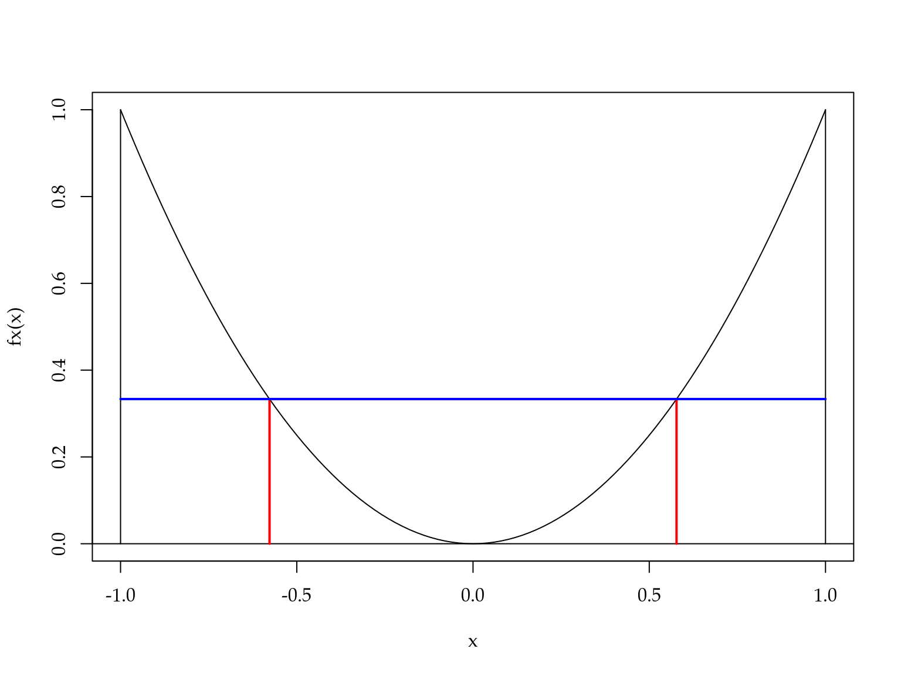
A área abaixo da curva em preto é aproximada pela área do retângulo abaixo da linha azul. Note que a base do retângulo tem tamanho \(1 - (-1) = 2\). Como a altura é \((1/\sqrt{3})^2\). Temos que a área do retângulo é \(2 \cdot (1/\sqrt{3})^2 = 2/3.\)
Quando \(f(x)\) é uma função do tipo \(f(x) = 1\), \(f(x) = x\), \(f(x) = x^2\) ou \(f(x) = x^3\) ou qualquer combinação linear destas o método de Gauss-Legendre é exato. Caso contrário o procedimento fornece uma aproximação. Considere \(f(x) = cos(x)\) o valor exato é \[\int_{-1}^{1} cos(x) dx = sen(x)|_{-1}^{1} = sen(1) - sen(-1) = 1.682841.\]
Usando Quadratura de Gauss-Legendre com \(n = 2\), tem-se \[\int_{-1}^{1} cos(x) dx \approx cos(-1/\sqrt{3}) + cos(1/\sqrt{3}) = 1.675823.\]
Uma aproximação bastante razoável e fácil de obter. A Figura 3.9 mostra como a aproximação de Gauss-Legendre funciona neste caso.
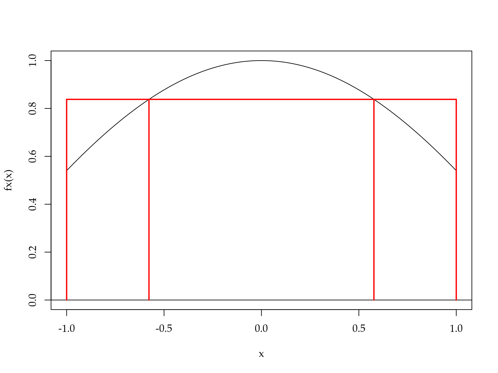
Neste caso, a área abaixo da curva em preto é aproximada pela área do retângulo em vermelho. Veja como a altura do retângulo é regulada para que a área seja o mais próximo possível da área abaixo da curva em preto.
Em todos os métodos de quadratura Gaussiana o número de pontos de integração controla a precisão da aproximação. Nós obtemos os pesos e pontos de integração para o caso mais simples, Gauss-Legendre com dois pontos de integração. No entanto, procedimentos similares são possíveis para um número arbitrário de pontos de integração e também para os outros métodos.
Em R o pacote pracma fornece uma implementação eficiente para obter os pesos e pontos de integração para os principais tipos de quadratura Gaussiana. O Código 3.17 mostra o uso do método de Gauss-Legendre com dois pontos de integração.
Código 3.17 Ilustração do uso do pacote pracma.
Code
require(pracma)Carregando pacotes exigidos: pracma
Attaching package: 'pracma'The following object is masked _by_ '.GlobalEnv':
newtonCode
gaussLegendre(n = 2, a = -1, b = 1)$x
[1] -0.5773503 0.5773503
$w
[1] 1 1Baseado nos pontos e pesos de integração fornecidos pelo pacote pracma é fácil construir funções genéricas para integração numérica via quadratura Gaussiana. O Código 3.18 apresenta uma função genérica para o cálculo de integrais via o método de quadratura de Gauss-Legendre.
Código 3.18 Quadratura de Gauss-Legendre.
Code
gauss_legendre <- function(integrando, n_pontos, a, b, ...){
pontos <- gaussLegendre(n_pontos, a = a, b = b)
integral <- sum(pontos$w*integrando(pontos$x,...))
return(integral)
}Vamos resolver novamente a integral \(\int_{-1}^{1} cos(x) dx\), porém agora usando dois e dez pontos de integração.
Code
# n = 2
gauss_legendre(integrando = cos, n_pontos = 2, a = -1, b = 1)[1] 1.675824Code
# n = 10
gauss_legendre(integrando = cos, n_pontos = 10, a = -1, b = 1)[1] 1.682942A quadratura de Gauss-Laguerre resolve integrais do tipo:
\[\int_{0}^{\infty} e^{-x} f(x) dx.\]
Novamente, a integral é aproximada por uma soma ponderada \[\int_{0}^{\infty} e^{-x} f(x) dx \approx \sum_{i=1}^n w_i f(x_i).\]
Os pesos e pontos de integração são obtidos de forma similar ao caso de Gauss-Legendre, porém baseado no polinômio de Laguerre. A implementação computacional é análoga ao caso de Gauss-Legendre e apresentada no Código 3.19.
Código 3.19 Quadratura de Gauss-Laguerre.
Code
gauss_laguerre <- function(integrando, n.pontos, ...){
pontos <- gaussLaguerre(n.pontos)
integral <- sum(pontos$w*integrando(pontos$x,...)
/exp(-pontos$x))
return(integral)
}Como exemplo, considere resolver a integral \(\int_{0}^\infty \lambda \exp(-\lambda x) dx\), cuja solução exata é \(1\).
Code
fx <- function(x, lambda) lambda*exp(-lambda*x)
# n = 2
gauss_laguerre(integrando = fx, n.pontos = 2, lambda = 10)[1] 0.04381233Code
# n = 10
gauss_laguerre(integrando = fx, n.pontos = 10, lambda = 10)[1] 0.8981046Code
# n = 100
gauss_laguerre(integrando = fx, n.pontos = 100, lambda = 10)[1] 1Note que neste caso foram necessários \(100\) pontos de integração para chegar a uma solução próxima a exata.
A quadratura de Gauss-Hermite resolve integrais do tipo: \[\int_{-\infty}^{\infty} e^{-x^2} f(x) dx.\]
Novamente, a integral é aproximada por uma soma ponderada \[\int_{-\infty}^{\infty} e^{-x^2} f(x) dx \approx \sum_{i=1}^n w_i f(x_i).\]
Os pesos e pontos de integração são obtidos de forma similar ao caso de Gauss-Legendre, porém baseado no polinômio de Hermite. A implementação computacional é similar ao caso de Gauss-Legendre e Gauss-Laguerre e apresentada no Código 3.20.
Código 3.20 Quadratura de Gauss-Hermite.
Code
gauss_hermite <- function(integrando, n.pontos, ...){
pontos <- gaussHermite(n.pontos)
integral <- sum(pontos$w*integrando(pontos$x,...)
/exp(-pontos$x^2))
return(integral)
}Para ilustrar o uso do método considere resolver a integral \(\int_{-\infty}^\infty \frac{1}{\sqrt{2 \pi}} \exp \left( -\frac{1}{2} y^2 \right) dy.\) Essa integral corresponde a função de densidade probabilidade da distribuição Normal padrão e a solução analítica apesar de disponível (\(=1\)) é dificil de obter.
Code
# n = 2
gauss_hermite(integrando = dnorm, n.pontos = 2)[1] 0.9079431Code
# n = 10
gauss_hermite(integrando = dnorm, n.pontos = 10)[1] 0.9999876Code
# n = 100
gauss_hermite(integrando = dnorm, n.pontos = 100)[1] 13.3.4 Quadratura de Gauss-Hermite adaptativa
A quadratura de Gauss-Hermite apresenta duas grandes limitações:
- Os pontos são escolhidos baseados no polinômio de Hermite, ignorando a função a ser integrada.
- O número de pontos necessários para a integração cresce como uma potência da dimensão da integral. Por exemplo, \(20\) pontos em uma dimensão demanda \(20^2 = 400\) pontos em duas dimensões e assim por diante.
Essas duas limitações levaram ao desenvolvimento do método de quadratura de Gauss adaptativa. A ideia é simplesmente espalhar os pontos de forma mais inteligente para diminuir o número de pontos necessários para aproximar a integral. A Figura 3.10 ilustra as limitações da quadratura Gaussiana de Gauss-Hermite em uma dimensão.
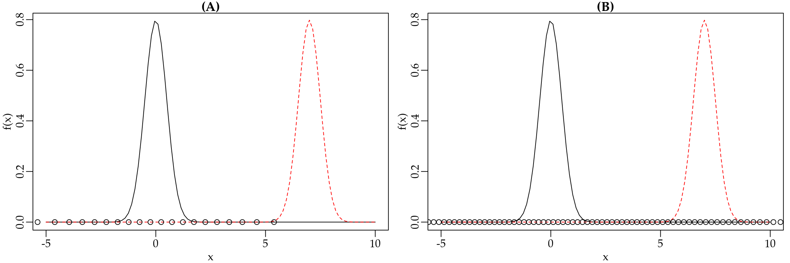
Na Figura 3.10(A) temos vinte pontos de integração de Gauss-Hermite. Note que, para aproximar a integral traçada pela linha preta cheia, os pontos estão bem colocados. No entanto, para aproximar a integral abaixo da curva em pontilhado os pontos estão mal colocados. Assim, na Figura 3.10(B) aumentamos o número de pontos de integração para \(100\). Neste caso temos pontos para integrar as duas funções, porém também existe um desperdício em relação ao número de avaliações da função. Uma vez que pela má colocação dos pontos estaremos avaliando a função muitas vezes em regiões onde a área é muito próxima de zero. Assim, fica claro que um melhor espalhamento dos pontos de integração é importante para a eficiência dos métodos de quadratura Gaussiana.
No método de Gauss-Hermite adaptativo os pontos de integração são centrados e escalonados como se \(f(x) e^{-x^2}\) fosse a distribuição Gaussiana. A média da aproximação Gaussiana será a moda \(\hat{x}\) de \(ln[f(x)e^{-x^2}]\). A variância da aproximação Gaussiana será \[\begin{bmatrix} - \frac{\partial^2}{\partial x^2} ln[f(x)e^{-x^2}]|_{x=\hat{x}} \end{bmatrix}^{-1}.\]
Portanto, os novos pontos de integração adaptados serão dados por \[x_i^+ = \hat{x} + \begin{bmatrix} - \frac{\partial^2}{\partial x^2} ln[f(x)e^{-x^2}]|_{x=\hat{x}} \end{bmatrix}^{-1/2} x_i\]
com correspondentes pesos, \[w_i^+ = \begin{bmatrix} - \frac{\partial^2}{\partial x^2} ln[f(x)e^{-x^2}]|_{x=\hat{x}} \end{bmatrix}^{-1/2} \frac{e^{x_i^+}}{e^{-x_i}} w_i.\]
Como antes, a integral é aproximada por \[\int f(x) e^{-x^2} dx \approx \sum_{i=1}^n w_i^+ f(x_i^+).\]
O principal desafio que surge no uso do método de Gauss-Hermite adaptativo é a necessidade de encontrar a moda e o hessiano de \(ln[f(x)e^{-x^2}]\). Na maioria dos casos uma solução analítica não estará disponível. Assim, a abordagem padrão é maximizar \(ln[f(x)e^{-x^2}]\) usando algum método de otimização numérica, conforme os que serão vistos na próxima seção. Outra abordagem é transformar o problema de maximização em um problema de resolução de sistema de equações não-lineares e proceder a solução usando o método de Newton ou gradiente descendente. Note que para isso precisamos obter a primeira derivada de \(ln[f(x)e^{-x^2}]\) e igualar a zero. Essa derivada pode ser obtida de forma analítica ou numérica, conforme discutido anteriormente.
3.3.5 Aproximação de Laplace
Um caso especial do método de Gauss-Hermite adaptativo é a aproximação de Laplace que corresponde a usar o método Gauss-Hermite adaptativo com apenas um ponto de integração. Denotando \(f(x)e^{-x^2}\) por \(Q(x)\) e como \(n=1\), \(x_1 = 0\) e \(w_1 = 1\), obtemos \(x_1^+ = \hat{x}\). Portanto, os pesos de integração são iguais a \[w_1^+ = | Q''(\hat{x}) |^{-1/2} \frac{e^{-\hat{x}}}{e^{-0}} = (2\pi)^{n/2} |Q''(\hat{x})|^{-1/2} \frac{e^{Q(\hat{x})}}{f(\hat{x})}.\]
Assim, a aproximação fica dada por \[\begin{align*} \int f(x) e^{-x^2} dx & = \int e^{Q(x)} dx \\ & \approx w_1^+ f(x_1^+) = (2\pi)^{n/2} |Q''(\hat{x})|^{-1/2} e^{Q(\hat{x})}. \end{align*}\]
O Código 3.21 fornece uma implementação genérica da aproximação de Laplace. Nesta implementação estamos usando a função optim() que implementa diferentes métodos de otimização numérica para encontrar o máximo e o hessiano do integrando.
Código 3.21 Aproximação de Laplace.
Code
laplace <- function(funcao, otimizador,n.dim, ...){
integral <- -999999
inicial <- rep(0,n.dim)
temp <- try(optim(inicial, funcao,..., method=otimizador,
hessian=TRUE, control=list(fnscale=-1)))
if(class(temp) != "try-error"){
integral <- exp(temp$value) * (exp((n.dim/2)*log(2*pi) -
0.5*determinant(-temp$hessian)$modulus))}
return(integral)
}Para exemplificar o uso do método vamos resolver a seguinte integral \(\int_{-\infty}^\infty \frac{1}{\sqrt{2 \pi}} \exp \left( -\frac{1}{2} y^2 \right) dy\) que corresponde a função densidade probabilidade da distribuição Normal padrão e portanto, tal integral deve ser igual a \(1\).
Code
laplace(dnorm, otimizador = "BFGS", n.dim = 1, log = TRUE)[1] 1
attr(,"logarithm")
[1] TRUE3.3.6 Método de Monte Carlo
O método de Monte Carlo é um método estatístico para a resolução de integrais. A ideia é tratar a integral como uma quantidade desconhecida da qual podemos retirar amostras para então estimar o valor da integral como uma média simples. Em outras palavras o objetivo é estimar o valor da integral de uma função \(f(x)\) em algum domínio \(D\) qualquer, em notação temos
\[\begin{equation} I = \int_D f(x) dx. \tag{3.14} \end{equation}\]
Seja \(p(x)\) uma função densidade probabilidade cujo domínio coincide com \(D\). Então, a integral em (3.14) é equivalente a \[I = \int_D \frac{f(x)}{p(x)} p(x) dx.\]
Que por sua vez corresponde a \(E\left( \frac{f(x)}{p(x)} \right)\). Assim, tendo valores amostrais \(x\) de \(p(x)\) nos permite calcular a razão \(\frac{f(x)}{p(x)}\) e por fim a esperança é aproximada usando a média amostral. Obviamente quanto maior a amostra de \(x\) melhor é a precisão do método. O algoritmo de Monte Carlo para resolução de uma integral pode ser resumido da seguinte forma:
- Gere números aleatórios de \(p(x)\);
- Calcule \(m_i = f(x_i)/p(x_i)\) para cada amostra, \(i = 1, \ldots, n\). 3, Calcule a média \(\sum_{i=1}^n \frac{m_i}{n}\).
Para \(D = \Re\) podemos usar a distribuição Normal como \(p(x)\) e uma implementação genérica do método de Monte Carlo é apresentada no Código 3.22.
Código 3.22 Método de Monte Carlo.
Code
monte.carlo <- function(funcao, n.pontos, ...) {
pontos <- rnorm(n.pontos)
norma <- dnorm(pontos)
integral <- mean(funcao(pontos,...)/norma)
return(integral)
}Integrando novamente a densidade Normal, agora usando o método de Monte Carlo.
Code
# Integrando a Normal padrão
monte.carlo(funcao = dnorm, n.pontos = 1000)[1] 13.3.7 Função do R para integração numérica
O R tem uma função nativa para a resolução de integrais: a integrate(). O método implementado depende do domínio de integração, mas é sempre uma variação do método de quadratura adaptativa. O uso da função é limitado a funções de uma variável independente. O Código 3.23 ilustra o uso da função integrate() na resolução de duas integrais.
Código 3.23 Uso da função integrate().
Code
# Integral da densidade Normal padrão
integrate(f = dnorm, lower = -Inf, upper = Inf)1 with absolute error < 9.4e-05Code
fx <- function(x)x^2
integrate(f = fx, lower = -1, upper = 1)0.6666667 with absolute error < 7.4e-15Na literatura de modelos estatísticos, a integração numérica é fundamental para a classe dos modelos mistos não-Gaussianos. Neste contexto, o método de Gauss-Hermite é muito popular. Porém, o método de Gauss-Hermite é limitado a integrais de baixa dimensão (< 5$). Trata-se de um método computacionalmente caro. Por esse motivo os estatísticos desenvolveram o método de Gauss-Hermite adaptativo que é menos caro computacionalmente, porém ainda é muito limitado em termos da dimensão da integral que consegue resolver. Por fim, a aproximação de Laplace tem despontado como o método de escolha por ser mais rápido computacionalmente e poder lidar com integrais de alta dimensão. A principal limitação da aproximação de Laplace é que ela é acurada apenas para integrandos simétricos. Por fim, a integração Monte Carlo é um método muito simples que pode, pelo menos em teoria, lidar com integrais de alta dimensão. Em termos práticos sua implementação é extremamente cara computacionalmente e difícil de implementar de forma genérica.
3.4 Otimização
Otimização é uma grande área da matemática com aplicações que vão desde a área da saúde até a indústria. Nesta subseção vamos ver apenas uma breve introdução aos métodos de otimização. De forma geral, os métodos de otimização partem de um modelo matemático rigoroso para determinar a solução mais eficiente para um dado problema.
Para usar os métodos de otimização precisamos identificar um objetivo. Isso envolve criar uma medida que mensure a performance. Por exemplo: rendimento, tempo, custo, total de vendas, entre outros. A ideia é resumir o problema a uma quantidade ou combinação de quantidades que possam ser representadas por um número. Lembrando do modelo de regressão linear múltipla, a função perda quadrática resumia o nosso objetivo, encontrar \(\hat{\beta}_0\) e \(\hat{\beta}_1\) que minimizam a perda implicada em usar o modelo ao invés dos dados observados. Até aqui falamos apenas da perda quadrática, mas existe uma infinidade de outras opções que seguem a mesma ideia. Para motivar a discussão sobre métodos de otimização, vamos voltar ao problema de redução de dados discutido na seção <a href=“CDI.html#RD1.2.5. Só que ao invés de considerar apenas a perda quadrática vamos considerar outras funções perda, como apresentado abaixo:
- Perda quadrática: \(\sum_{i=1}^n (y_i - \mu)^2\).
- Perda absoluta: \(\sum_{i=1}^n |y_i - \mu|\).
- Perda minimax: Minimize \(max(|y_i - \mu|)\).
Dado um conjunto de observações \(y_i\) queremos resumir a informação por meio de apenas um número que chamaremos de \(\mu\). A ideia é usar \(\mu\) que minimize alguma função perda. Podemos facilmente fazer um gráfico de cada função perda para ver o seu comportamento. A Figura 3.11 apresenta o gráfico das funções perda quadrática, valor absoluto e minmax para um conjunto de dados com \(100\) observações de \(y_i\).
Note que a função perda quadrática é muito suscetível a valores extremos. Uma vez que ela eleva as diferenças ao quadrado, um valor discrepante tem grande influência no valor de \(\mu\). Por outro lado, a função perda absoluta não é tão suscetível a valores discrepantes. Por fim, a perda minmax busca minimizar apenas a maior perda. Sendo portanto uma medida bastante conservadora, no sentido de apresentar valores de perda reduzido (veja as escalas dos eixos \(y\) em cada gráfico).
Seja qual for a medida escolhida, o problema se resume em encontrar o valor, digamos, \(\hat{\mu}\) que minimiza cada uma destas funções perda. Assim, temos claramente um problema de otimização. Este tipo de construção é muito comum em estatística e ciência de dados. Basta você entender que \(\mu\) pode ser substituído por um modelo tão complexo quanto necessário, variando desde o mais ingênuo modelo de regressão linear simples até redes neurais convolucionais com múltiplas camadas de milhões de parâmetros. A ideia continua a mesma, minimizar a distância entre os dados e o modelo representado em \(\mu\).
Os problemas de otimização são classificados de acordo com o tipo de função objetivo. Nos problemas chamados de programação linear (LP) tanto a função objetivo como as restrições são lineares, \[\underset{\boldsymbol{y}}{\mathrm{min}} \quad \boldsymbol{c}^{\top} \boldsymbol{y}, \quad \text{sujeito a} \quad \boldsymbol{A} \boldsymbol{y} \leq \boldsymbol{b} \quad \text{e} \quad \boldsymbol{y} \geq 0.\]
Nos problemas chamados de programação quadrática (QP) a função objetivo é quadrática, mas as restrições ainda são lineares, \[\underset{\boldsymbol{y}}{\mathrm{min}} \quad \boldsymbol{y}^{\top} \boldsymbol{Q} \boldsymbol{y} + \boldsymbol{c}^{\top} \boldsymbol{y}, \quad \text{sujeito a} \quad \boldsymbol{A} \boldsymbol{y} \leq \boldsymbol{b} \quad \text{e} \boldsymbol{y} \geq 0.\]
Por fim, a classe mais geral de problemas são chamados de programação não-linear (NLP), onde a função objetivo ou ao menos uma restrição é não linear.
Cada classe de problemas tem seus próprios métodos de solução. Em R temos pacotes específicos para cada tipo de problema. Além disso, é comum também distinguir se o problema tem ou não restrições. Quando o problema tem restrição é chamado de otimização restrita. Tais restrições podem ser de igualdades ou desigualdades.
A Tabela 3.1 apresenta um resumo dos principais pacotes R e o tipo de problemas de otimização que eles resolvem.
| Tipo de problema | Pacote | Função |
|---|---|---|
| Propósito geral (1 dim) | Built in | optimize(…) |
| Propósito geral (n dim) | Built in | optim(…) |
| Programação Linear | lpSolve | lp(…) |
| Programação quadrática | quadprog | solve.QP(…) |
| Programação não-linear | optimize | optimize(…) |
| Programação não-linear | optimx | optimx(…) |
Além dos pacotes mencionados na Tabela #tab:otimpacote3.1 existe uma infinidade de outros pacotes com os mais diversos algoritmos implementados em R. Para uma lista completa o leitor deve consultar o Task View - Optimization and Mathematical programming.
Em geral, as funções que implementam os diferentes algoritmos de otimização em R seguem um padrão. A função optim() é provavelmente a mais popular para problemas de programação não-linear. O Código 3.24 apresenta os seus principais argumentos.
Código 3.24 Argumentos da função optim().
Code
args(optim)function (par, fn, gr = NULL, ..., method = c("Nelder-Mead",
"BFGS", "CG", "L-BFGS-B", "SANN", "Brent"), lower = -Inf,
upper = Inf, control = list(), hessian = FALSE)
NULLO mínimo que um otimizador numérico precisa para trabalhar é de valores iniciais (argumento par) e a função a ser otimizada (argumento fn). Como veremos, existem diversos algoritmos, alguns precisam do gradiente da função a ser otimizada (argumento gr), porém ter o gradiente não é obrigatório para a maioria dos algoritmos, uma vez que o gradiente pode ser obtido numericamente. Alguns algoritmos permitem restringir o campo de busca da solução informando um valor mínimo (lower) e máximo (upper) de busca. Por fim, funções genéricas como a optim() apresentam um argumento method que permite usar diferentes algoritmos com a mesma chamada geral.
Para exemplificar o uso de um otimizador genérico, vamos considerar o problema de redução de dados usando as funções perda quadrática, absoluta e minmax. Como este é um problema unidimensional, a função recomendada é a optimize(). O primeiro passo é implementar cada uma das funções perda, conforme o Código 3.25.
Código 3.25 Funções perda quadrática, absoluta e minmax.
Code
## Perda quadrática
perda_quad <- function(mu, y) { sum((y-mu)^2) }
## Perda absoluta
perda_abs <- function(mu, y) { sum(abs(y-mu)) }
## Perda minmax
perda_minmax <- function(mu, y) { max(abs(y-mu)) }Apenas para a ilustração vamos simular um conjunto de \(100\) valores, seguindo um modelo de Poisson com média \(3\).
Code
set.seed(123)
y <- rpois(100, lambda = 3)Agora usamos o otimizador numérico para encontrar \(\hat{\mu}\) baseado em cada uma das funções perda.
Code
## Perda quadrática
fit_quad <- optimize(f = perda_quad, interval = c(0, 20), y = y)
## Perda absoluta
fit_abs <- optimize(f = perda_abs, interval = c(0, 20), y = y)
## Perda minmax
fit_minmax <- optimize(f = perda_minmax, interval = c(0, 20), y = y)
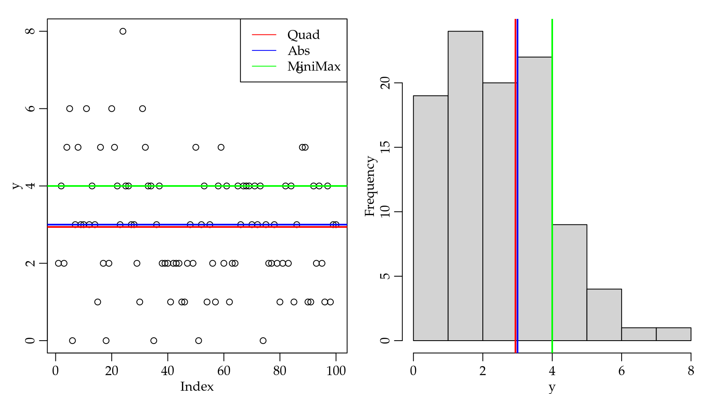
Conforme já tínhamos obtido, a perda quadrática é minimizada pela média amostral, enquanto que a perda absoluta resulta na mediana amostral. A perda minmax é uma função alternativa usada quando quer-se minimizar grandes discrepâncias entre o modelo e os dados.
Em termos operacionais, usar o otimizador numérico foi muito mais fácil do que proceder com o uso de derivadas seguida pela solução de um sistema de equações. Principalmente no caso da perda minmax o trabalho para obter uma solução analítica é oneroso. Note que não foi necessário fazer nenhum cálculo, seja de derivada ou solução de equações. O uso de otimizadores numéricos parece ser a solução para quem não gosta de matemática. Porém não se engane, tem muita matemática acontecendo por trás da função otimizadora. Nas próximas seções, vamos dar uma noção do tipo de algoritmo usado para resolver cada um dos tipos de problemas de otimização: linear, quadrática e não-linear. Sendo que a maior ênfase será a problemas de otimização não-linear.
3.4.1 Programação linear
Um problema de otimização é linear se a função objetivo e as restrições são lineares. Em termos de notação matemática, temos \[\underset{\boldsymbol{x}}{\mathrm{min}} \begin{bmatrix} c_1 \\ c_2 \\ \vdots \\ c_n \end{bmatrix}^\top \begin{bmatrix} x_1 \\ x_2 \\ \vdots \\ x_n \end{bmatrix} \quad \text{s.t} \begin{bmatrix} a_{11} & a_{12} & \ldots & a_{1n} \\ a_{21} & a_{22} & \ldots & a_{2n} \\ \vdots & \ddots & \ddots & \vdots \\ a_{m1} & a_{m2} & \ldots & a_{mn} \end{bmatrix} \begin{bmatrix} x_1 \\ x_2 \\ \vdots \\ x_n \end{bmatrix} \geq \begin{bmatrix} b_1 \\ b_2 \\ \vdots \\ b_n \end{bmatrix}, \quad \begin{bmatrix} x_1 \\ x_2 \\ \vdots \\ x_n \end{bmatrix} \geq 0.\]
Alternativamente, podemos usar uma notação mais compacta \[\begin{eqnarray*} \underset{\boldsymbol{x}}{\mathrm{min}} \boldsymbol{c}^{\top} \boldsymbol{x} & =& \underset{\boldsymbol{x}}{\mathrm{min}} \quad c_1 x_1 + c_2 x_2 + \ldots + c_n x_n \\ & \text{s.t}& \quad \boldsymbol{A} \boldsymbol{x} \geq \boldsymbol{b}, \boldsymbol{x} \geq 0. \end{eqnarray*}\]
Para materializar o problema vamos fazer um exemplo. Considere que uma empresa fabrica dois tipos de produtos. O produto A é vendido por R$ 25 e o produto B é vendido por R$ 20. Existem algumas restrições para a produção, por exemplo o produto A precisa de 20 u.p (unidades de produção) e o produto B precisa de 12 u.p. Para um dia de trabalho a empresa dispõe de 1800 u.p. Uma outra restrição é a questão do tempo de produção. Para produzir tanto o produto A como o B a empresa gasta \(1/15\) hrs. Lembrando que o dia de trabalho tem 8 horas. Note que a empresa pode escolher quanto vai produzir de cada produto. Assumindo que todos os produtos fabricados serão vendidos, o objetivo é maximizar o lucro total. Para resumir o problema, temos
- Objetivo: maximizar o lucro total.
- Produtos A e B são vendidos por R$ 25 e R$ 20.
- Restrição de recursos
- O produto A precisa de 20 u.p e o produto B precisa 12 u.p.
- Apenas 1800 u.p estão disponíveis por dia.
- Restrição de tempo
- Produtos A e B demoram \(1/15\) hrs para produzir.
- Um dia de trabalho tem 8 hrs.
Temos um problema prático. Agora precisamos estabelecer um modelo matemático rigoroso que possa ser resolvido usando alguma das técnicas de otimização. Esta etapa é chamada de formulação do problema.
Primeiro, denote \(x_1\) e \(x_2\) o número de itens A e B produzidos. O objetivo é maximizar o total de vendas, assim o lucro total será dado por \[\underset{\boldsymbol{x_1,x_2}}{\mathrm{max}}\quad 25 x_1 + 20 x_2.\]
Porém, temos diversas restrições com relação a recursos e tempo de produção. \[\begin{matrix} 20x_1 + 12x_2 \leq 1800 \\ \frac{1}{15}x_1 + \frac{1}{15}x_2 \leq 8 \end{matrix}.\]
Reescrevendo as restrições em forma matricial. \[\underset{\boldsymbol{A}}{\underbrace{\begin{bmatrix} 20 & 12\\ \frac{1}{15} & \frac{1}{15} \end{bmatrix}}} \underset{\boldsymbol{x}}{\underbrace{\begin{bmatrix} x_1\\ x_2 \end{bmatrix}}} \leq \underset{\boldsymbol{b}}{\underbrace{\begin{bmatrix} 1800\\ 8 \end{bmatrix}}}.\]
O problema está formulado, agora precisamos resolvê-lo. Para um problema simples como este, apenas pelo exemplo podemos usar a chamada solução força bruta. Que consiste simplesmente em tentar todas as possibilidades possíveis para um certo conjunto de \(x_1\) e \(x_2\) e depois verificar quais atendem as restrições do problema e selecionar a melhor. Vamos começar implementando essa solução ingênua.
Primeiro vamos criar uma sequência de possíveis valores para \(x_1\) e \(x_2\). Depois combiná-las usando a função expand.grid(). Por fim, criamos uma função genérica para dado uma vetor de entrada com \(x = (x_1, x_2)\) seja retornado o lucro.
Code
x1 <- 0:140
x2 <- 0:140
grid <- expand.grid(x1,x2)
lucro <- function(x) 25*x[1] + 20*x[2]Vamos também implementar uma função que avalia a restrição de recursos.
Code
recurso <- function(x) {
out <- 20*x[1] + 12*x[2]
if(out > 1800) out = 0
return(out)
}E por fim, uma função que avalia a restrição de tempo.
Code
tempo <- function(x) {
out <- (1/15)*x[1] + (1/15)*x[2]
if(out > 8) out = 0
return(out)
}A Figura 3.13 apresenta todas as tentativas de soluções e marca a região factível, ou seja, soluções que respeitam as restrições de produção e tempo.
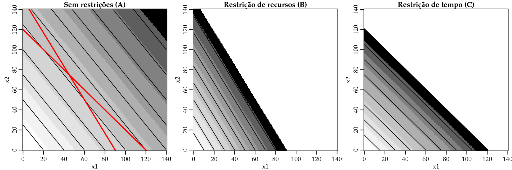
Na Figura 3.13 (A) são apresentadas todas as possibilidades de produção envolvendo os produtos A e B. As linhas em vermelho são as restrições de recursos e tempo. Note que cada vez que impomos uma restrição, tiramos uma série de possíveis soluções. A solução ótima é aquela que está dentro da região factível e resulta no maior lucro possível. Este ponto é exatamente onde as linhas representando as restrições se cruzam.
Esta ideia pode ser generalizada para \(n\) restrições e dá origem ao algoritmo Simplex. O pacote lpSolve fornece uma implementação eficiente do algoritmo Simplex por meio da função lp(). O Código 3.26 apresenta a solução do problema da empresa usando a função lp().
Código 3.26 Exemplo de uso da função lp() do pacote lpSolve().
Code
require(lpSolve)Carregando pacotes exigidos: lpSolveCode
objective.in <- c(25, 20) # c's
const.mat <- matrix(c(20, 12, 1/15, 1/15), nrow=2, byrow=TRUE)
const.rhs <- c(1800, 8)
const.dir <- c("<=", "<=")
optimum <- lp(direction = "max", objective.in, const.mat,
const.dir, const.rhs)
optimum$solution # Solução[1] 45 75Code
optimum$objval # Lucro[1] 2625A solução mostra que a empresa deve produzir \(45\) itens do produto A e \(75\) do produto B para atingir o lucro máximo de R$ 2.625. Sendo esta a solução ótima dado os recursos disponíveis. Podemos incluir a solução no gráfico anterior para ver que ela se posiciona exatamente no cruzamento entre as retas das restrições, conforme a Figura 3.14 mostra.
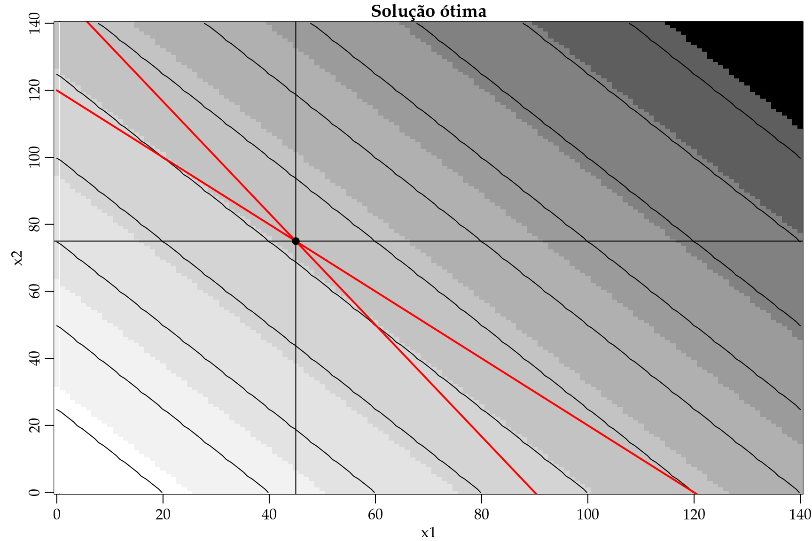
3.4.2 Programação quadrática
No caso da programação quadrática o problema matemático é especificado da seguinte forma \[\underset{\boldsymbol{x}}{\mathrm{min}} \frac{1}{2} \boldsymbol{x}^\top \mathbf{D} \boldsymbol{x} - \boldsymbol{d}^{\top} \boldsymbol{x}, \text{s.t} \quad \mathbf{A} \boldsymbol{x} \geq \boldsymbol{b}.\] onde \(\mathbf{D}\) representa os coeficientes quadráticos, \(\boldsymbol{d}\) os coeficientes lineares e \(\mathbf{A}\) é uma matriz de constantes. As restrições de igualdade ou desigualdade são representadas por \(\boldsymbol{b}\). Em R o pacote quadprog resolve problemas de programação quadrática sua principal função é solve.QP().
Code
require(quadprog)Carregando pacotes exigidos: quadprogCode
args(solve.QP)function (Dmat, dvec, Amat, bvec, meq = 0, factorized = FALSE)
NULLMapeando os argumentos da função solve.QP() com os componentes do problema de programação quadrática temos:
- Coeficientes quadráticos \(\mathbf{D} \to\)
Dmat. - Coeficientes lineares \(\boldsymbol{d} \to\)
dvec. - Matriz de constantes \(\mathbf{A} \to\)
Amat. - Restrições de igualdade ou desigualdade \(\boldsymbol{b} \to\)
bvec. - Argumento
meq = nfixa as primeiras \(n\) restrições como lineares.
Já nos deparamos com um problema de programação quadrática quando discutimos sobre o modelo de regressão linear múltipla. Para mostrar um problema ligeiramente diferente vamos considerar um modelo de regressão múltipla, porém com uma restrição nos coeficientes de regressão. Neste caso, o problema de regressão é resolvido por minimizar a perda quadrática sob uma restrição. Por exemplo, \[\underset{\boldsymbol{\beta}}{\mathrm{min}} (\boldsymbol{y} - \mathbf{X}\boldsymbol{\beta})^{\top}(\boldsymbol{y} - \mathbf{X}\boldsymbol{\beta}), \quad \text{sujeito a} \quad \sum f(\boldsymbol{\beta}) \leq s.\]
Abrindo a forma quadrática, temos \[\underset{\boldsymbol{\beta}}{\mathrm{min}} \quad \boldsymbol{y}^{\top}\boldsymbol{y} - 2 \boldsymbol{y}^{\top} \mathbf{X}\boldsymbol{\beta} + \boldsymbol{\beta}^{\top} \mathbf{X}^{\top} \mathbf{X} \boldsymbol{\beta}.\]
Assim, fica fácil identificar os componentes do problema de programação quadrática, \[\mathbf{D} = \mathbf{X}^{\top} \mathbf{X} \quad \text{e} \quad \boldsymbol{d} = \boldsymbol{y}^{\top} \mathbf{X}.\]
Suponha que o interesse seja restringir que a soma dos coeficientes de regressão seja igual a \(1\). Neste caso a matriz de restrições \(A\) é um vetor coluna \(p \times 1\), onde \(p\) é o número de coeficientes de regressão a serem estimados.
Para ilustrar os cálculos computacionais, vamos começar simulando um conjunto de dados para o ajuste do modelo de regressão. O conjunto de dados simulado terá \(100\) observações e duas covariáveis \(x_1\) e \(x_2\), sendo ambas de uma distribuição uniforme no intervalo \((0,1)\). Os coeficientes de regressão serão fixados em \(\beta_0 = 0.15\), \(\beta_1 = 0.25\) e \(\beta_2 = 0.6\). Para gerar algum ruído nas observações vamos adicionar valores de uma distribuição Normal padrão.
Code
n <- 100
x1 <- runif(n)
x2 <- runif(n)
y <- 0.15 + 0.25*x1 + 0.6*x2 + rnorm(n)
X <- cbind(rep(1,n), x1, x2 )O próximo passo é criar a matriz de restrições e estimar os coeficientes de regressão.
Code
Amat <- matrix(c(1,1,1),ncol = 1, nrow = 3) # Soma dos betas = 1
b = c(1)
s <- solve.QP( t(X) %*% X, t(y) %*% X, Amat = Amat, bvec = b, meq = 1)Por fim, verificamos se a restrição foi atendida.
Code
s$solution[1] 0.06258905 0.54262211 0.39478885Code
sum(s$solution)[1] 1Diversas outras restrições podem ser impostas aos coeficientes do modelo de acordo com a necessidade de cada análise. Em geral, tais restrições não são populares nas técnicas convencionais de ciência de dados. Talvez as técnicas mais famosas que usam os princípios de programação quadrática com restrições sejam as máquinas de vetores de suporte ou em Inglês support vector machines. Porém, uma discussão mais detalhada sobre tais técnicas está fora do escopo deste livro.
3.4.3 Programação não-linear
Nos casos em que a função objetivo ou alguma restrição seja não-linear estamos lidando com um problema de programação não-linear. Esta é uma grande área da matemática e é comum categorizar os métodos baseado na dimensionalidade do problema que eles resolvem.
Para problemas unidimensionais o método Golden Section search é provavelmente um dos mais populares. Já usamos este método no início desta seção quando usamos a função optimize().
Para problemas multidimensionais existe uma infinidade de métodos, mas que de forma geral se encaixam em quatro tipos de algoritmos:
- Não baseados em gradiente (gradiente free): como o próprio nome já diz são métodos que não usam a informação do gradiente para otimizar a função objetivo. São também chamados de métodos de ordem \(0\). Dentro desta classe o algoritmo de Nelder-Mead é bastante popular.
- Baseados em gradiente: esta classe de algoritmos usa o gradiente da função objetivo para orientar a otimização da função objetivo. O exemplo mais popular é o gradiente descendente, mas existem inúmeras variações tal como o gradiente conjugado.
- Baseados em hessiano: esta classe além de usar o gradiente, usa também o hessiano da função objetivo para orientar a otimização da função objetivo. O mais popular é o método de Newton que já vimos na seção de solução de equações não-lineares. Como já discutimos, o método de Newton é caro computacionalmente. Assim, surgiram os métodos chamados quasi-Newton que tentam imitar o método de Newton, porém com alguma forma mais barata (aproximada) do hessiano. Dentro desta classe o método BFGS é muito popular.
- Baseados em simulação e ideias genéticas: esta classe de métodos busca otimizar a função objetivo gerando uma série de soluções aproximadas que vão sendo melhoradas passo-a-passo. Em geral são métodos computacionalmente intensivos que buscam explorar toda a extensão da função objetivo em busca do seu valor ótimo. Um algoritmo popular é o Simulating Annealing (SANN).
Em R a função optim() é a escolha inicial quando se trata de programação não-linear. Ela implementa os métodos de Nelder-Mead, Gradiente Conjugado, BFGS e SANN. Na sequência, vamos discutir as principais ideias por trás de cada um destes algoritmos. É importante ressaltar que existe uma infinidade de variações nas implementações. Assim, é importante ler a documentação para saber os detalhes e variações na implementação de cada método.
3.4.3.1 Golden section search
Para problemas unidimensionais o método Golden Section Search é o mais popular e eficiente. O algoritmo é simples:
- Defina a razão de ouro \(\psi = \frac{\sqrt{5} - 1}{2} = 0.618\);
- Escolha um intervalo \([a,b]\) que contenha a solução;
- Avalie \(f(x_1)\) onde \(x_1 = a + (1-\psi)(b-a)\) e compare com \(f(x_2)\) onde \(x_2 = a + \psi (b - a)\);
- Se \(f(x_1) < f(x_2)\) continua a procura em \([a,x_1]\) caso contrário em \([x_2,b]\).
O Código 3.27 apresenta o protótipo de uma implementação do método Golden Section Search. Vale ressaltar que esta implementação é apenas para fins didáticos e que em termos práticos a função optimize() implementa este método de forma otimizada.
Código 3.27 Implementação didática do método Golden Section Search.
Code
my_gss <- function(fc, interval, max_iter = 10, tol = 1e-04, ...) {
psi <- (sqrt(5) - 1)/2
intervalo <- matrix(NA, ncol = 2, nrow = max_iter)
intervalo[1,] <- interval
sol <- c()
for(i in 2:max_iter) {
a <- intervalo[c(i-1),1]
b <- intervalo[c(i-1),2]
x1 <- a + (1-psi)*(b-a)
x2 <- a + psi*(b-a)
f_x1 <- fc(x1, ...)
f_x2 <- fc(x2, ...)
if(f_x1 < f_x2) {intervalo[i,] <- c(a, x1); sol[i] <- x1} else
{intervalo[i,] <- c(x2, b); sol[i] <- x2}
if( abs( (intervalo[i,2]-intervalo[i,1])/2) < tol) break
}
out <- list("Solução" = sol[i], "Intervalos" = intervalo, "Tentativas" = sol)
return(out)
}Como exemplo de uso do método, considere minimizar a função \(f(x) = |x-2| + 2 |x-1|\). Para usar a função optimize() ou a my_gss() precisamos implementar a função objetivo. O Código 3.28 implementa a função objetivo de forma adequada para ser otimizada usando as funções optmize() ou my_gss().
Código 3.28 Exemplo de função objetivo unidimensional.
Code
fx <- function(x) {
out <- abs(x-2) + 2*abs(x-1)
return(out)
}Usando a função my_gss() para otimizar a função de interesse.
Code
sol <- my_gss(fc = fx, interval = c(-3,3), max_iter = 15)
sol$Solução
[1] 1.000019
$Intervalos
[,1] [,2]
[1,] -3.0000000 3.000000
[2,] 0.7082039 3.000000
[3,] 0.7082039 1.583592
[4,] 0.7082039 1.042572
[5,] 0.9148551 1.042572
[6,] 0.9937888 1.042572
[7,] 0.9937888 1.012422
[8,] 0.9937888 1.000906
[9,] 0.9981876 1.000906
[10,] 0.9998678 1.000906
[11,] 0.9998678 1.000264
[12,] 0.9998678 1.000019
[13,] NA NA
[14,] NA NA
[15,] NA NA
$Tentativas
[1] NA 0.7082039 1.5835921 1.0425725 0.9148551 0.9937888 1.0124225
[8] 1.0009062 0.9981876 0.9998678 1.0002644 1.0000193Fica claro pela saída do algoritmo que o intervalo foi sendo estreitado até que a precisão especificada foi atingida. Neste caso, foram necessárias \(12\) iterações para atingir a convergência.
De forma similar, podemos usar a função optmize(). Vale lembrar que na função optim() o método Golden Section Search é chamado de Brent. Procedendo com a otimização, temos
Code
out <- optimize(f = fx, interval = c(-3,3))
out$minimum
[1] 1.000021
$objective
[1] 1.000021Figura 3.15 apresenta o traço do algoritmo, ou seja, o passo-a-passo até obter a solução final.
A Figura 3.15 (A) apresenta toda a extensão da função. Cada número representa a tentativa de solução do método. A Figura 3.15 (B) apresenta apenas a parte da função próxima ao valor ótimo. Novamente os números representam a tentativa de solução do método. Quando próximo da solução, o método propõe soluções cada vez mais próximas, é a parte de um ajuste fino. Por isso, os números ficam praticamente sobrepostos.
3.4.3.2 Método Nelder-Mead
O método de Nelder-Mead é um método genérico de otimização que não usa informação do gradiente da função a ser otimizada. O algoritmo de Nelder-Mead consiste dos seguintes passos:
- Escolha um simplex com \(n+1\) pontos \(p_1, \ldots p_{n+1}\), sendo \(n\) o número de incógnitas.
- Calcule \(f(p_i)\) e ordene por tamanho \(f(p_1) \leq \ldots f(p_{n})\).
- Avalie se o melhor valor é bom o suficiente. Se for, pare.
- Delete o ponto com maior/menor \(f(p_i)\) do simplex.
- Escolha um novo ponto para o simplex.
- Volte ao passo 2.
O passo 1 consiste basicamente em propor algumas possíveis soluções para o problema para no passo 2 avaliá-las na função objetivo e ordená-las de modo a descartar a pior no passo 4. Em geometria, simplex é uma generalização da noção de triângulo ou tetraedro, mas que em um espaço multidimensional é difícil de nomear. Assim, é simplesmente chamado de simplex.
O passo 5 é crucial e consiste em escolher um novo ponto para substituir o ponto retirado no passo 4. Existem diversas formas de fazer esta substituição. Porém, a mais popular é mover para o ponto central do melhor lado e refletir o simplex para o lado da melhor solução. Se o ponto obtido oferecer uma solução melhor do que as já avaliadas, movemos na direção correta, caso contrário podemos expandir ou contrair para obter um outro ponto. O processo continua até que algum critério de convergência seja atingido.
É mais fácil explicar a ideia do método de Nelder-Mead por meio de uma figura. Considere a Figura 3.16(A) onde temos uma função bidimensional. Nosso objetivo é encontrar o ponto de mínimo desta função que claramente, dados os valores das curvas de nível, fica no centro da figura.
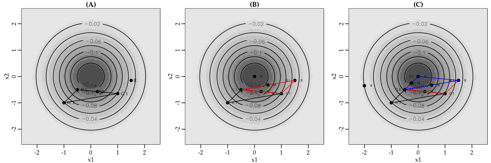
Figura 3.16 (A) apresenta a primeira iteração do algoritmo. Começamos com o triângulo (cor preta) definido pelos pontos \((W_1, G_1\) e \(B_1)\). Ordenando os pontos temos que \(B_1\) é o melhor seguido por \(G_1\) e o pior é \(W_1\). Sendo assim, \(W_1\) é o ponto que precisa ser removido. Para isso vamos projetar o simplex para o melhor lado, ou seja, o lado \(B_1\) e \(G_1\). O ponto central do melhor lado é dado por \[M = \frac{B + G}{2} = \left( \frac{x_1 + x_2}{2}, \frac{y_1 + y_2}{2} \right).\]
Agora refletimos o simplex para o lado BG usando a seguinte equação \[R = M + (M - W) = 2M - W.\]
Com isso obtemos um novo ponto chamado de \(R\). Ainda temos algumas decisões a serem tomadas. Se a função em \(R\) é menor que em \(W\) movemos na direção correta. Assim,
- Opção 1: faça \(W = R\) e repita.
- Opção 2: expanda usando o ponto \(E = 2R - M\) e \(W = E\) e repita.
Por outro lado, se a função em \(R\) e \(W\) são iguais contraia \(W\) para próximo a \(B\) e repita. Note que a cada passo uma decisão lógica precisa ser tomada. Seja qual for a escolha, a ideia é ir melhorando a solução. As Figuras 3.16(B) e 3.16(C) apresentam a segunda e terceira iteração do método, respectivamente. Para facilitar a visualização, os triângulos obtidos nas iterações 2 e 3 são marcados com as cores vermelho e azul. Note que na terceira iteração o método já está próximo da solução. As iterações devem continuar até que um critério de parada seja atingido. O método de Nelder-Mead está implementado na função optim() sendo a opção default.
Para ilustrar o uso do método de Nelder-Mead em uma função bidimensional considere que o objetivo é otimizar a seguinte função das variáveis \(y_1\) e \(y_2\) fcbidi\[\begin{equation} f(\mathbf{y}) = 10 y_1 \ln(y_2) + 10 \ln \Gamma(y_1) + \frac{15}{y_2} - (y_1 - 1)1.40. \tag{3.15} \end{equation}\]
O primeiro passo é implementar a função objetivo. Note que a entrada é feita através de um vetor bidimensional.
Código 3.29 Função objetivo bidimensional para ilustração dos métodos de otimização.
Code
fc_obj <- function(par) {
y1 <- par[1]
y2 <- par[2]
out <- 10*y1*log(y2) + 10*lgamma(y1) + (15/y2) - (y1-1)*1.40
return(out)
}Figuras 3.17(A) e 3.17(B) apresentam os gráficos de perspectiva e contornos da função em fcbidi(3.15).
O próximo passo é usar a função optim() com o argumento method = Nelder-Mead.
Code
otimo <- optim(par = c(1, 1), fn = fc_obj, method = "Nelder-Mead")
otimo$par
[1] 2.034705 0.737219
$value
[1] 12.84552
$counts
function gradient
61 NA
$convergence
[1] 0
$message
NULLA função optim() retorna uma lista com uma série de resultados e informações sobre o processo de otimização. Importante ressaltar que por default a optim() procura pelo mínimo da função objetivo. Caso você esteja interessado no máximo você pode multiplicar a função objetivo por \(-1\), ou usar o argumento fnscale = -1 que é equivalente. O slot par da lista apresenta a solução ótima. Neste caso \(y_1 = 1\) e \(y_2 = 1\) são os valores que tornam a função objetivo mínima. O slot value apresenta o valor da função objetivo no ponto de mínimo. O slot count indica quantas vezes a função foi avaliada até encontrar o mínimo. Por fim, o slot convergence é um código indicando o status final do algoritmo, onde \(0\) indica que o algoritmo convergiu. Para mais detalhes sobre a saída veja a documentação ?optim. Por fim, a Figura #fig:tracNelderMead3.18 apresenta o traço do algoritmo. Os números representam a iteração e os pontos de cada tentativa até encontrar o ponto de mínimo da função.
3.4.3.3 Métodos baseados em gradiente
O gradiente de uma função indica a direção do seu máximo. Sendo assim, usar a informação do gradiente para otimizar uma função é uma ideia natural. Nós já discutimos o método do gradiente descendente para a solução de sistemas de equações não-lineares. Nesta seção nós vamos apenas estender a ideia para a otimização de uma função.
Suponha que o objetivo é minimizar uma função \(f(\mathbf{x})\) que vai do \(\Re^n \to \Re\) que seja diferenciável e convexa. Denote por \(\nabla f(\mathbf{x})\) o gradiente de \(f(\mathbf{x})\). Como o gradiente aponta para a direção do máximo e estamos interessados no mínimo basta andar na direção contrária, ou seja, \(-\nabla f(\mathbf{x})\) a um passo de tamanho, digamos, \(\alpha\). Assim, a partir de uma solução inicial podemos caminhar na direção do mínimo, simplesmente iterando a Equação (3.16) até que algum critério de convergência seja satisfeito.
\[\begin{equation} \mathbf{x}_{k+1} = \mathbf{x}_{k} - \alpha \nabla f(\mathbf{x}_k). \tag{3.16} \end{equation}\]
Note que a Equação (3.16) é exatamente a aplicação do método do gradiente descendente para resolver o sistema de equações \(\nabla f(\mathbf{x}) = \mathbf{0}\). Como já mencionado, o ponto central para o uso deste método é a escolha do valor \(\alpha\). Diferentes estratégias de especificação de \(\alpha\) levam a algoritmos com nomes diferentes.
Uma ideia simples é encontrar o valor de \(\alpha_k\) que a cada iteração torne \(f(x_{k+1})\) mínima. Essa ideia resulta no algoritmo chamado de steepest descendent. A ideia é simples, mas envolve alguma estratégia para encontrar tal \(\alpha_k\). Uma estratégia simples é a busca em linha que nada mais é do que a cada iteração escolher \(\alpha_k\) que minimiza \(f(\mathbf{x}_{k+1})\) para \(\alpha_k \in \Lambda\), onde \(\Lambda\) é algum intervalo a ser especificado. Como a taxa de aprendizagem \(\alpha\) em geral toma valores pequenos, o intervalo unitário pode ser uma escolha razoável. Porém, obviamente deve ser avaliado caso a caso. Uma outra opção seria usar algum outro algoritmo como o Golden Section Search para encontrar \(\alpha_k\).
Neste livro, vamos seguir com a busca em linha. Assim, dada uma solução inicial, o algoritmo steepest descent com busca em linha atualiza a solução usando a seguinte equação \[\begin{equation} \mathbf{x}_{k+1} = \mathbf{x}_{k} - \alpha_k \nabla f(\mathbf{x}_k), \tag{3.17} \end{equation}\]
onde \(\alpha_k\) minimiza \(f(x_{k+1})\) com \(\alpha_k \in \Lambda\).
Tanto a Equação (3.16) quanto a Equação (3.17) assumem que o gradiente de \(f(\mathbf{x})\) está disponível. Em alguns casos pode não ser simples obter \(\nabla f(\mathbf{x}_k)\) analiticamente ou mesmo muito caro para calcular computacionalmente. Nestas situações pode-se usar as técnicas de diferenciação numérica vistas na seção #DN3.2 para aproximar \(\nabla f(\mathbf{x}_k)\). É claro que essa estratégia vai acarretar um custo computacional extra para aproximar o gradiente a cada iteração do algoritmo.
Uma outra opção é usar o gradiente descendente, porém a cada iteração forçar que a direção de busca seja conjugada a direção de busca mais recente. Dois vetores \(\mathbf{x}_1\) e \(\mathbf{x}_2\) são conjugado em relação a uma matriz \(\mathbf{A}\) se \(\mathbf{x}_1^{\top} \mathbf{A} \mathbf{x}_2^{\top} = 0\). Essa ideia leva ao método chamado de gradiente conjugado, ou em Inglês, conjugate gradient. A versão do gradiente conjugado proposta por Fletcher–Reeves é a opção default da função optim() quando o argumento method = "CG" é especificado. Neste caso, a equação de iteração é a seguinte \[\begin{equation}
\mathbf{x}_{k+1} = \mathbf{x}_k - \alpha_k \nabla f(\mathbf{x}_k) + \frac{\alpha_k \beta_k}{\alpha_{k-1}}(\mathbf{x}_k - \mathbf{x}_{k-1}),
\end{equation}\] onde \(\beta_k = \frac{\nabla f(\mathbf{x}_k)^{\top} \nabla f(\mathbf{x}_k)}{\nabla f(\mathbf{x}_{k-1})^{\top} \nabla f(\mathbf{x}_{k-1})}\).
Outras duas variações do método propostas por Polak–Ribière e Hestenes–Stiefel estão implementadas na optim(). O Código 3.30 apresenta uma implementação didática do método gradiente descendente para minimizar uma função. De forma similar, os Códigos 3.31 e 3.32 implementam os métodos steepest descendent e gradiente conjugado com duas opções para obter \(\alpha_k\): na primeira apenas avaliamos a função em uma grade de valores para \(\alpha\) e tomamos aquele que minimiza a função no próximo passo. Essa abordagem é também chamada de grid search. A segunda opção é usar o método Golden Section Search. Nas três implementações fornecer o gradiente da função objetivo é opcional. Caso não seja fornecido, o gradiente será obtido de forma numérica usando a diferença central. Esse método é obtido usando method = "simple" na função grad() do pacote numDeriv.
Código 3.30 Implementação didática do método do gradiente descendente para minimizar uma função.
Code
grad_desc <- function(inicial, funcao, gradiente = NULL, alpha,
tol = 1e-05, max_iter = 100, ...) {
## Cria uma função para avaliar o gradiente caso o usuário não forneça
if(is.null(gradiente)) {
gradiente <- function(ponto, ...) {
numDeriv::grad(func = funcao, x = ponto, method = "simple", ...)
}
}
## Objetos para guardar a solução
solucao <- matrix(NA, ncol = length(inicial), nrow = max_iter)
solucao[1,] <- inicial
for(i in 1:c(max_iter-1)) {
solucao[i+1,] <- solucao[i,] - alpha*gradiente(ponto = solucao[i,], ...)
if( sum(abs(solucao[i+1,] - solucao[i,])) < tol) break
}
out <- list("Iterações" = solucao, "Solução" = solucao[c(i+1),])
return(out)
}Código 3.31 Implementação didática do método steepest descendent para minimizar uma função.
Code
steep_desc <- function(inicial, funcao, gradiente = NULL,
intervalo = c(0,1),
precisao = 0.01,
strategy = "grid_search",
tol = 1e-05, max_iter = 100, ...) {
## Cria uma função para avaliar o gradiente caso o usuario não forneça
if(is.null(gradiente)) {
gradiente <- function(ponto, ...) {
numDeriv::grad(func = funcao, x = ponto, method = "simple", ...)
}
}
## Cria uma função para encontrar o alpha otimo a cada iteração
fc <- function(alpha, xk, funcao, gradiente, ...) {
xk1 <- xk - alpha*gradiente(ponto = xk, ...)
out <- funcao(xk1, ...)
return(out)
}
# Forma vetorizada para o grid search
fc_vec <- Vectorize(fc, "alpha")
## Funcao para encontrar o alpha
get_alpha <- function(xk, strategy = "grid_search", interval, prec = precisao, ...) {
if(strategy == "grid_search") {
gride <- seq(interval[1], interval[2], by = prec)
fc_value <- fc_vec(alpha = gride, xk = xk, funcao = funcao, gradiente = gradiente, ...)
alpha_otimo <- gride[which.min(fc_value)]
}
if(strategy == "golden_search") {
out <- optimize(f = fc, interval = interval, xk = xk, funcao = funcao,
gradiente = gradiente, ...)
alpha_otimo <- out$minimum
}
return(alpha_otimo)
}
## Objetos para guardar a solução
solucao <- matrix(NA, ncol = length(inicial), nrow = max_iter)
solucao[1,] <- inicial
for(i in 1:c(max_iter-1)) {
alpha <- get_alpha(xk = solucao[i,], strategy = strategy, interval = intervalo)
solucao[i+1,] <- solucao[i,] - alpha*gradiente(ponto = solucao[i,], ...)
if( sum(abs(solucao[i+1,] - solucao[i,])) < tol) break
}
out <- list("Iterações" = solucao, "Solução" = solucao[c(i+1),])
return(out)
}Código 3.32 Implementação didática do método do gradiente conjugado para minimizar uma função.
Code
grad_conju <- function(inicial, funcao, gradiente = NULL,
intervalo = c(0,1),
precisao = 0.01,
strategy = "grid_search",
tol = 1e-05, max_iter = 100, ...) {
## Cria uma função para avaliar o gradiente caso o usuário não forneça
if(is.null(gradiente)) {
gradiente <- function(ponto, ...) {
numDeriv::grad(func = funcao, x = ponto, method = "simple", ...)
}
}
## Cria uma função para encontrar o alpha otimo a cada iteração
fc <- function(alpha, xk, funcao, gradiente, ...) {
xk1 <- xk - alpha*gradiente(ponto = xk, ...)
out <- funcao(xk1, ...)
return(out)
}
# Forma vetorizada para o grid search
fc_vec <- Vectorize(fc, "alpha")
## Funcao para encontrar o alpha ótimo
get_alpha <- function(xk, strategy = "grid_search", interval, prec = precisao, ...) {
if(strategy == "grid_search") {
gride <- seq(interval[1], interval[2], by = prec)
fc_value <- fc_vec(alpha = gride, xk = xk, funcao = funcao, gradiente = gradiente, ...)
alpha_otimo <- gride[which.min(fc_value)]
}
if(strategy == "golden_search") {
out <- optimize(f = fc, interval = interval, xk = xk, funcao = funcao,
gradiente = gradiente, ...)
alpha_otimo <- out$minimum
}
return(alpha_otimo)
}
## Objetos para guardar a solução
solucao <- matrix(NA, ncol = length(inicial), nrow = max_iter)
grad_temp <- matrix(NA, ncol = length(inicial), nrow = max_iter)
solucao[1,] <- inicial
alpha <- c()
beta <- c()
for(i in 1:c(max_iter-1)) {
alpha[i] <- get_alpha(xk = solucao[i,], strategy = strategy, interval = intervalo)
if(i == 1) {
#solucao[i+1,] <- solucao[i,] - alpha*gradiente(ponto = solucao[i,], ...)
grad_temp[i,] <- gradiente(ponto = solucao[i,], ...)
solucao[i+1,] <- solucao[i,] - alpha[i]*grad_temp[i,]
} else {
grad_temp[i,] <- gradiente(ponto = solucao[i,], ...)
beta[i] <- t(grad_temp[i,])%*%grad_temp[i,]/t(grad_temp[c(i-1),])%*%grad_temp[c(i-1),]
solucao[i+1,] <- solucao[i,] - alpha[i]*grad_temp[i,] + (alpha[i]*beta[i] /alpha[c(i-1)])*(solucao[i,] - solucao[c(i-1),])
}
if( sum(abs(solucao[i+1,] - solucao[i,])) < tol) break
}
out <- list("Iterações" = solucao, "Solução" = solucao[c(i+1),])
return(out)
}Para ilustrar e comparar o uso dos métodos baseados em gradiente, vamos minimizar a função da Equação (3.15) e implementada no Código etivo3.29. É importante ressaltar que a função em (3.15) tem solução e gradiente analítico. No entanto, apenas pelo exemplo didático estamos usando algoritmos de otimização numérica e o gradiente será obtido também de forma numérica. Assim, tudo que precisamos é da implementação computacional da função objetivo e um vetor de valores iniciais.
Code
## Gradiente descendente
gd <- grad_desc(inicial = c(1,1), funcao = fc_obj, alpha = 0.05, max_iter = 150)
## Steepest descedent
sd <- steep_desc(inicial = c(1,1), funcao = fc_obj, intervalo = c(0, 0.2))
## Gradiente conjugado
gc <- grad_conju(inicial = c(1,1), funcao = fc_obj)Warning in log(y2): NaNs produzidos
Warning in log(y2): NaNs produzidosCode
## Comparando as soluções obtidas
cbind(gd$Solução, sd$Solução, gc$Solução) [,1] [,2] [,3]
[1,] 2.0345651 2.0339857 2.0340624
[2,] 0.7372096 0.7374629 0.7374386Os resultados mostram que os três algoritmos chegaram a soluções muito próximas. Isso nem sempre será verdade e vai depender dos critérios de convergência e da função sendo otimizada.
Por fim, as Figuras 3.19(A), 3.19(B) e 3.19(C) apresentam o traço dos algoritmos gradiente descendente, steepest descendent e gradiente conjugado, respectivamente.
Neste exemplo o gradiente descendente precisou de \(140\) iterações para convergir, enquanto que o steepest descedent e o gradiente conjugado precisaram de \(80\) e \(23\) iterações, respectivamente. No entanto em termos de tempo computacional o gradiente descendente é o mais rápido, seguido pelo steepest descendent e pelo gradiente conjugado. Isso é resultado da escolha adaptativa do parâmetro \(\alpha\) que consome tempo computacional.
Code
## Gradiente descendente
system.time(gd <- grad_desc(inicial = c(1,1), funcao = fc_obj,
alpha = 0.05, max_iter = 150)) usuário sistema decorrido
0 0 0 Code
## Steepest descedent
system.time(sd <- steep_desc(inicial = c(1,1), funcao = fc_obj,
intervalo = c(0, 0.2))) usuário sistema decorrido
0.02 0.00 0.05 Code
## Gradiente conjugado
system.time(gc <- grad_conju(inicial = c(1,1), funcao = fc_obj))Warning in log(y2): NaNs produzidos
Warning in log(y2): NaNs produzidos usuário sistema decorrido
0.05 0.00 0.07 3.4.3.4 Métodos baseados em Hessiano
Conforme discutido na seção anterior, a escolha do parâmetro \(\alpha\) é crucial para a eficiência computacional e sucesso dos métodos baseados em gradiente. Nos métodos baseados em gradiente e hessiano o parâmetro \(\alpha\) é substituído pelo inverso do hessiano, obtendo um passo de certa forma ótimo. Uma vez que usa a própria curvatura da função no ponto avaliado a cada iteração. A ideia é que a cada passo a função objetivo é aproximada por uma função quadrática que pode ser otimizada de forma analítica. Por sucessivas otimizações de uma função mais simples a função objetivo é otimizada.
Nós já discutimos o método de Newton para resolver um sistema de equações não-lineares. A otimização de uma função suave e diferenciável \(f(\mathbf{x})\) é o mesmo que resolver o sistema de equações não-lineares \(\nabla f(\mathbf{x}) = 0\). Usando o método de Newton o sistema é resolvido iterando a seguinte equação \[\mathbf{x}^{(i+1)} = \mathbf{x}^{(i)} - \mathbf{J(x^{(i)})}^{-1} \nabla f(\mathbf{x}^{(i)}),\] onde \(\mathbf{J}\) é uma matrix \(p \times p\) de segundas derivadas de \(f(\mathbf{x})\), ou seja, o hessiano. O ideal é que tanto o gradiente como o hessiano sejam obtidos analiticamente. Porém, em implementações genéricas é possível usar aproximações numéricas para ambos. Cabe ressaltar que neste caso o custo computacional é elevado.
Para problemas onde o número de variáveis \(p\) é elevado, como é frequente em redes neurais, o cálculo do hessiano é extremamente oneroso computacionalmente o que torna o uso deste tipo de método praticamente inviável. Mesmo para problemas de médio porte, o cálculo e armazenamento do hessiano é caro, o que levou ao desenvolvimento de métodos que buscam aproximar \(\mathbf{J(x^{(i)})}^{-1}\) de uma forma mais simples e barata para calcular e armazenar. Essa ideia leva a classe de métodos quasi-Newton.
A ideia dos métodos quasi-Newton é imitar o método de Newton, porém usando alguma aproximação para \(\mathbf{J(x^{(i)})}^{-1}\). Assim, a equação de iteração fica genericamente dada por \[\mathbf{x}^{(i+1)} = \mathbf{x}_{(i)} - \alpha_i \mathbf{H}_i \nabla f(x^{(i)}),\] onde \(\mathbf{H}_i\) é alguma aproximação para o inverso do Hessiano. De forma análoga aos métodos baseados em gradiente \(\alpha_i\) é o tamanho do passo e precisa ser especificado ou otimizado usando um esquema tipo line search. Seja \(\boldsymbol{\delta}_i = \mathbf{x}^{(i+1)} - \mathbf{x}^{(i)}\) e \(\boldsymbol{\gamma}_i = \nabla f(\mathbf{x}^{(i+1)}) - \nabla f(\mathbf{x}^{(i)})\).
Um algoritmo pioneiro nesta classe é o chamado algoritmo DFP. O algoritmo DFP faz sucessivas aproximações do inverso do hessiano usando a seguinte equação de iteração \[\mathbf{H}_{i+1} = \mathbf{H}_i - \frac{\mathbf{H}_i \boldsymbol{\gamma}_i \boldsymbol{\gamma}_i^{\top} \mathbf{H}_i}{\boldsymbol{\gamma}_i^{\top} \mathbf{H}_i \boldsymbol{\gamma}_i} + \frac{\boldsymbol{\delta}_i \boldsymbol{\delta}_i^{\top}}{\boldsymbol{\gamma}_i^{\top} \boldsymbol{\delta}_i}.\]
Broyden, Fletcher, Goldfarb e Shanno propuseram, baseado no algoritmo DFP, o algoritmo BFGS que leva as iniciais de seus autores e é provavelmente o método quasi-Newton mais popular em uso atualmente. A ideia do BFGS é aproximar o inverso do hessiano por \[\mathbf{H}_{i+1} = \mathbf{H}_i + \frac{(\delta_i^{\top} \gamma_i + \gamma_i^{\top} \mathbf{H}_i \gamma_i)(\delta_i \delta_i^{\top})}{(\delta_i^{\top} \gamma_i)^2} - \frac{\mathbf{H}_i \gamma_i \delta_i^{\top} + \delta_i \gamma_i^{\top} \mathbf{H}_i}{\delta_i^{\top}\gamma_i}.\] Implementações modernas do BFGS usam wolfe line search para encontrar \(\alpha_i\). Porém, a descrição de tal estratégia está além dos objetivos deste livro. O algoritmo BFGS está implementado na função optim() por meio do argumento method = "BFGS".
Da mesma forma que fizemos para os métodos baseados em gradiente, vamos apresentar implementações computacionais do método de Newton, DFP e BFGS apenas para ilustrar os aspectos básicos e dar alguma intuição de como funcionam. Importante ressaltar que nestas implementações vamos obter o \(\alpha_i\) usando a estratégia golden search com as mesmas funções já criadas para os métodos baseados em gradiente. Os Códigos 3.33, 3.34 e 3.35 implementam os métodos Newton, DFP e BFGS, respectivamente.
Código 3.33 Implementação didática do método de Newton para minimizar uma função.
Code
newton <- function(inicial, funcao, gradiente = NULL, hessiano = NULL,
tol = 1e-04, max_iter = 150) {
if(is.null(gradiente)) {
gradiente <- function(ponto, ...) {
numDeriv::grad(func = funcao, x = ponto, method = "simple")
}
}
if(is.null(hessiano)) {
hessiano <- function(ponto, ...) {
numDeriv::hessian(func = funcao, x = ponto)
}
}
solucao <- matrix(NA, ncol = length(inicial), nrow = max_iter)
solucao[1,] <- inicial
for(i in 1:max_iter) {
J <- hessiano(solucao[i,])
grad <- gradiente(solucao[i,])
solucao[i+1,] = solucao[i,] - solve(J, grad)
if( sum(abs(solucao[i+1,] - solucao[i,])) < tol) break
}
out <- list("Solução" = solucao[i,], "Iterações" = solucao)
return(out)
}Código 3.34 Implementação didática do método DFP para minimizar uma função.
Code
DFP <- function(inicial, funcao, gradiente = NULL, alpha, Hi = NULL, tol = 1e-04, max_iter = 150) {
if(is.null(gradiente)) {
gradiente <- function(ponto, ...) {
numDeriv::grad(func = funcao, x = ponto, method = "simple", ...)
}
}
## Cria uma função para encontrar o alpha ótimo a cada iteração
fc <- function(alpha, xk, funcao, gradiente, ...) {
xk1 <- xk - alpha*gradiente(ponto = xk, ...)
out <- funcao(xk1, ...)
return(out)
}
# Forma vetorizada para o grid search
fc_vec <- Vectorize(fc, "alpha")
## Funcao para encontrar o alpha
get_alpha <- function(xk, strategy = "golden_search", interval, prec = precisao, ...) {
if(strategy == "grid_search") {
gride <- seq(interval[1], interval[2], by = prec)
fc_value <- fc_vec(alpha = gride, xk = xk, funcao = funcao, gradiente = gradiente, ...)
alpha_otimo <- gride[which.min(fc_value)]
}
if(strategy == "golden_search") {
out <- optimize(f = fc, interval = interval, xk = xk, funcao = funcao,
gradiente = gradiente, ...)
alpha_otimo <- out$minimum
}
return(alpha_otimo)
}
if(is.null(Hi)) {Hi <- diag(1, nrow = length(inicial))}
solucao <- matrix(NA, ncol = length(inicial), nrow = max_iter)
solucao[1,] <- inicial
alpha <- c()
for(i in 1:c(max_iter-1)) {
grad <- gradiente(solucao[i,])
alpha[i] <- get_alpha(xk = solucao[i,], interval = c(0, 0.2), prec = 0.01)
solucao[c(i+1),] = solucao[i,] - as.numeric(alpha[i]*Hi%*%grad)
deltai <- solucao[c(i+1),] - solucao[i,]
gammai <- gradiente(solucao[c(i+1),]) - gradiente(solucao[i,])
Hi <- Hi - Hi%*%gammai%*%t(gammai)%*%Hi/as.numeric((t(gammai)%*%Hi%*%gammai)) +
deltai%*%t(deltai)/(as.numeric(t(gammai)%*%deltai))
if( sum(abs(solucao[c(i+1),] - solucao[i,])) < tol) break
}
out <- list("Solução" = solucao[i,], "Iterações" = solucao)
return(out)
}Código 3.35 Implementação didática do método BFGS para minimizar uma função.
Code
BFGS <- function(inicial, funcao, gradiente = NULL, alpha, Hi = NULL, tol = 1e-04, max_iter = 150) {
if(is.null(gradiente)) {
gradiente <- function(ponto, ...) {
numDeriv::grad(func = funcao, x = ponto, method = "simple", ...)
}
}
## Cria uma função para encontrar o alpha otimo a cada iteração
fc <- function(alpha, xk, funcao, gradiente, ...) {
xk1 <- xk - alpha*gradiente(ponto = xk, ...)
out <- funcao(xk1, ...)
return(out)
}
# Forma vetorizada para o grid search
fc_vec <- Vectorize(fc, "alpha")
## Função para encontrar o alpha
get_alpha <- function(xk, strategy = "golden_search", interval = c(0,1),
prec = 0.01, ...) {
if(strategy == "grid_search") {
gride <- seq(interval[1], interval[2], by = prec)
fc_value <- fc_vec(alpha = gride, xk = xk, funcao = funcao, gradiente = gradiente, ...)
alpha_otimo <- gride[which.min(fc_value)]
}
if(strategy == "golden_search") {
out <- optimize(f = fc, interval = interval, xk = xk, funcao = funcao,
gradiente = gradiente, ...)
alpha_otimo <- out$minimum
}
return(alpha_otimo)
}
if(is.null(Hi)) {Hi <- diag(1, nrow = length(inicial))}
solucao <- matrix(NA, ncol = length(inicial), nrow = max_iter)
solucao[1,] <- inicial
alpha <- c()
for(i in 1:c(max_iter-1)) {
grad <- gradiente(solucao[i,])
alpha[i] <- get_alpha(xk = solucao[i,])
solucao[c(i+1),] = solucao[i,] - as.numeric(alpha[i]*Hi%*%grad)
deltai <- solucao[c(i+1),] - solucao[i,]
gammai <- gradiente(solucao[c(i+1),]) - gradiente(solucao[i,])
#Bi <- Bi + (gammai%*%t(gammai))/as.numeric(t(gammai)%*%deltai) -
# (Bi%*%deltai%*%t(deltai)%*%t(Bi))/as.numeric(t(deltai)%*%Bi%*%deltai)
term1 <- as.numeric((t(deltai)%*%gammai + t(gammai)%*%Hi%*%gammai))
Hi <- Hi + term1*(deltai%*%t(deltai))/as.numeric((t(deltai)%*%gammai)^2) -
(Hi%*%gammai%*%t(deltai) + deltai%*%t(gammai)%*%Hi)/ as.numeric(t(deltai)%*%gammai)
if( sum(abs(solucao[c(i+1),] - solucao[i,])) < tol) break
}
out <- list("Solução" = solucao[c(i+1),], "Iterações" = solucao)
return(out)
}Para ilustrar o uso de cada método vamos novamente minimizar a função da Equação (3.15).
Code
# Método de Newton
nt <- newton(inicial = c(1,1), funcao = fc_obj)
# Método DFP
dfp <- DFP(inicial = c(1,1), funcao = fc_obj)
# Método BFGS
bfgs <- BFGS(inicial = c(1,1), funcao = fc_obj)
## Solucao
cbind(nt$Solução, dfp$Solução, bfgs$Solução) [,1] [,2] [,3]
[1,] 2.0346688 2.0338099 2.0339711
[2,] 0.7371705 0.7374678 0.7374127Novamente os três métodos convergiram para praticamente o mesmo ponto, com diferença apenas na terceira casa decimal. Neste exemplo, o método de Newton precisou de apenas \(7\) iterações para atingir convergência. Já os métodos DFP e BFGS precisaram de \(111\) e \(109\) iterações, respectivamente.
Para finalizar a discussão sobre os métodos baseados em hessiano, a Figura 3.20 apresenta o traço dos métodos de Newton, DFP e BFGS para minimizar a função da Equação (3.15).
Fica claro que o método de Newton anda muito mais rapidamente na superfície da função objetivo, uma vez que usa o seu hessiano para dar o passo. O DFP e BFGS foram inicializados com \(\mathbf{H}_i = \mathbf{I}\) o que significa que o primeiro passo é o mesmo que o do método steepest descendent. Entretanto, conforme \(\mathbf{H}_i\) vai se distanciando da identidade os algoritmos vão explorando partes diferentes da função objetivo.
3.4.3.5 Métodos baseados em simulação
Os métodos baseados em simulação são computacionalmente intensivos e trabalham com a ideia de propor soluções de forma aleatória e a partir destas escolher as melhores para gerarem novas soluções e assim sucessivamente. De forma genérica os algoritmos baseados em simulação buscam maximizar a função objetivo e seguem as seguintes etapas:
- Gere uma solução aleatória \(\mathbf{x}_1\);
- Calcule a função objetivo no ponto simulado \(f(\mathbf{x}_1)\);
- Gere uma solução \(\mathbf{x}_2\) na vizinhança de \(\mathbf{x}_1\) ;
- Calcule a função objetivo no novo ponto \(f(\mathbf{x}_2)\):
- Se \(f(\mathbf{x}_2) > f(\mathbf{x}_1)\) mova para \(\mathbf{x}_2\).
- Se \(f(\mathbf{x}_2) < f(\mathbf{x}_1)\) TALVEZ mova para \(\mathbf{x}_2\).
- Repita passos 3-4 até atingir algum critério de convergência ou número máximo de iterações.
Interessante notar que mesmo se a nova solução proposta não diminuir a função objetivo, o algoritmo ainda dá alguma chance para mover para este ponto. Essa estratégia é para fugir de pontos de mínimo local e consequentemente explorar de forma completa a superfície da função objetivo.
Para decidir se um ponto \(\mathbf{x}_2\) quando \(f(\mathbf{x}_2) < f(\mathbf{x}_1)\) será aceito, usa-se uma probabilidade de aceitação \[a = \exp{ (f(\mathbf{x}_2) - f(\mathbf{x}_1))/T},\]
onde \(T\) é a temperatura (pense como um tuning). Se \(f(\mathbf{x}_2) > f(\mathbf{x}_1)\) então \(a > 1\), assim o \(\mathbf{x}_2\) será aceito com probabilidade 1. Por outro lado, se \(f(\mathbf{x}_2) < f(\mathbf{x}_1)\) então \(0 < a < 1\). Assim, \(\mathbf{x}_2\) será aceito se \(a > U(0,1)\). Para implementar este tipo de algoritmo precisamos entender como gerar uma solução na vizinhança de um ponto qualquer. Isso nem sempre é trivial e em geral usa ideias de probabilidade condicional que não serão abordadas neste texto.
O algoritmo Simulating annealing é provavelmente o mais popular desta classe e está disponível na função optim() por meio da opção method = "SANN". O uso é idêntico ao método de Nelder-Mead e ilustrado no Código 3.36.
Código 3.36 Ilustração do uso do método Simulating annealing.
Code
otimo <- optim(par = c(1, 1), fn = fc_obj, method = "SANN")
otimo$par
[1] 2.055357 0.726176
$value
[1] 12.84608
$counts
function gradient
10000 NA
$convergence
[1] 0
$message
NULLAssim, chegamos ao fim da apresentação dos principais algoritmos de programação não-linear. Uma pergunta que fica é como escolher o melhor algoritmo para uma situação prática. Infelizmente, não existe uma resposta precisa para esta pergunta. Porém, podemos ao menos indicar ao leitor algumas recomendações práticas:
- Se a função a ser otimizada é diferenciável e o problema é de médio porte (algumas dezenas de parâmetros), o algoritmo de Newton é uma boa opção. Porém, o ideal é que tanto o gradiente quando o hessiano sejam obtidos de forma analítica. O uso de derivadas numéricas é caro computacionalmente e o custo cresce rapidamente com o número de parâmetros a serem otimizados.
- Se a função a ser otimizada é diferenciável e o problema é de grande porte (centenas ou milhares de parâmetros), não há muita escolha, os métodos baseados em gradiente devem ser usados. Dê preferência ao gradiente descendente e sua versão gradiente descendente estocástico.
- Se o problema é de pequeno a médio porte e você não conhece o comportamento da função objetivo e quer usar um algoritmo numérico apenas para ter uma noção inicial e rápida do problema, recomenda-se o uso do algoritmo de Nelder-Mead. Neste caso é sempre indicado inicializar o algoritmo em diferentes valores iniciais e verificar se o resultado é sensível à escolha dos valores iniciais. Se sim, o algoritmo recomendado é o Simulating annealing.
Por fim, lembre-se que os algoritmos numéricos tratam todos os parâmetros da mesma forma, porém em muitas situações você terá parâmetros que representam características ou mesmo grandezas diferentes. Assim, sempre que possível é recomendado transformar os parâmetros para que estejam na mesma escala. Neste sentido, padronizar as entradas é uma opção interessante. Em outras situações, pode ser que os parâmetros tenham espaço paramétricos diferentes. Neste caso o recomendado é fazer uma reparametrização para tornar todos os parâmetros irrestritos, ou seja, o espaço paramétrico seja toda a reta real. Por fim, ao utilizar algoritmos genéricos como os implementados na função optim() é importante que a sua função seja a prova de erros. Assim, você evita que o algoritmo pare a busca pelo ótimo. Para isto, você precisa entender o comportamento da sua função e fazer o tratamento de exceção adequado.
3.5 Referências bibliográficas
Para construir este capítulo não foi utilizado um único livro que contemplasse todos os tópicos. Como base para solução de equações não-lineares e diferenciação numérica foi consultado Gilat and Subramaniam (2009). Para a parte de integração numérica foi bastante difícil encontrar uma referência abrangente, principalmente para os métodos de quadratura Gaussiana adaptativa e Monte Carlo. Deixo como referência a documentação do pacote pracma Borchers (2021) para a parte de quadratura Gaussiana. Para a quadratura adaptativa e aproximação de Laplace o livro Molenberghs and Verbeke (2006) apresenta um pequeno resumo, mas suficiente para o entendimento e implementação dos métodos. Por fim, para a parte de otimização foi utilizada a documentação do pacote lpSolve Berkelaar and others (2020) e o livro Becker, Chambers, and Wilks (1988) que é a principal referência usada pela função optim().
3.6 Exercícios
Os exercícios deste livro são na forma de tutoriais interativos.
Acesse Exercícios Métodos Numéricos.